<!doctype html>
<html lang="en">
<head>
  <meta charset="utf-8">
  <meta name="viewport" content="width=device-width, initial-scale=1">
  <title>arxiv digest — 2026-06-02</title>
  <style>
:root {
  --bg: #ffffff;
  --fg: #1f2328;
  --muted: #59636e;
  --border: #d0d7de;
  --card: #f6f8fa;
  --link: #0969da;
}
body {
  max-width: 980px;
  margin: 0 auto;
  padding: 2rem 1rem 5rem;
  font-family: -apple-system, BlinkMacSystemFont, "Segoe UI", Helvetica, Arial, sans-serif;
  line-height: 1.55;
  color: var(--fg);
  background: var(--bg);
}
a { color: var(--link); }
img { max-width: 100%; height: auto; }
pre, code { background: var(--card); border-radius: 6px; }
pre { padding: 1rem; overflow-x: auto; }
blockquote { border-left: 4px solid var(--border); padding-left: 1rem; color: var(--muted); }
details { margin: 0.6rem 0; }
summary { cursor: pointer; font-weight: 600; }
.paper-figures-scroll {
  display: flex;
  gap: 1rem;
  overflow-x: auto;
  overscroll-behavior-x: contain;
  padding: 0.75rem 0.25rem 1rem;
  margin: 1rem 0 1.25rem;
  border-top: 1px solid var(--border);
  border-bottom: 1px solid var(--border);
  scroll-snap-type: x proximity;
}
.paper-figure-card {
  flex: 0 0 min(260px, 72vw);
  scroll-snap-align: start;
  background: var(--card);
  border: 1px solid var(--border);
  border-radius: 12px;
  padding: 0.55rem;
}
.paper-figure-card img {
  display: block;
  width: 100%;
  max-height: 240px;
  object-fit: contain;
  background: white;
  border-radius: 8px;
}
.paper-figure-caption {
  display: block;
  margin-top: 0.5rem;
  color: var(--muted);
  font-size: 0.85rem;
}
.figure-strip-hint {
  color: var(--muted);
  font-size: 0.9rem;
  margin-bottom: -0.3rem;
}
</style>
  <!-- MathJax: renders $...$ inline math and $$...$$ display math, plus
       \(...\) and \[...\]. Loaded from the official CDN; works offline
       once cached. Configured to skip code/pre blocks so arxiv IDs that
       look like dollar amounts don't get mangled. -->
  <script>
    window.MathJax = {
      tex: {
        inlineMath: [['$', '$'], ['\\(', '\\)']],
        displayMath: [['$$', '$$'], ['\\[', '\\]']],
        processEscapes: true,
        processEnvironments: true
      },
      options: {
        skipHtmlTags: ['script', 'noscript', 'style', 'textarea', 'pre', 'code'],
        ignoreHtmlClass: 'tex2jax_ignore',
        processHtmlClass: 'tex2jax_process'
      }
    };
  </script>
  <script id="MathJax-script" async
    src="https://cdn.jsdelivr.net/npm/mathjax@3/es5/tex-chtml.js"></script>
</head>
<body>
<header style="background-color: #333; color: white; padding: 15px; margin-bottom: 20px;">
  <h1 style="margin: 0; font-size: 24px;">
    <a href="https://ochelpan.github.io/arXiv_clean/" style="color: white; text-decoration: none;">Main</a>
  </h1>
</header>

<h1>Daily arXiv Report</h1>

<hr>
<p>
<a href="index.html">← Index</a>
 · <a href="papers_02.html">Next →</a>
</p>
<hr>

<h2>Papers 1–20</h2>
<p><a id="paper-2606.01743"></a></p>
<h3 id="non-destructive-cavity-readout-of-molecules-for-precision-measurements">⭐ <a href="http://arxiv.org/abs/2606.01743v1">Non-destructive cavity readout of molecules for precision measurements</a></h3>
<p><strong>Highlighted author(s):</strong> Vladan Vuletić<br>
<strong>Authors:</strong> Alejandro Salas-Estrada, Silviu-Marian Udrescu, Geoffrey Zheng, Qian Wang, Arian Jadbabaie, Vladan Vuletić, David DeMille, Ronald F. Garcia Ruiz, Edwin Pedrozo-Peñafiel<br>
<strong>Type:</strong> experiment · <strong>Category:</strong> other · <strong>PDF:</strong> <a href="https://arxiv.org/pdf/2606.01743v1">https://arxiv.org/pdf/2606.01743v1</a><br>
<strong>Analysis basis:</strong> full PDF text, analyzed in chunks
<strong>Topic relevance:</strong> 🔥 <code>quantum measurements</code> <strong>4/5</strong> · 🔥 <code>quantum optics experiment</code> <strong>4/5</strong> · <code>Tavis-Cummings &amp; cavity-many-emitter</code> <strong>3/5</strong> · <code>analog quantum simulation</code> <strong>3/5</strong> · <code>correlated cavity matter</code> <strong>3/5</strong> · <code>QC/QI experiment</code> <strong>2/5</strong> · <code>measurement-induced transitions</code> <strong>2/5</strong> · <code>correlated / nonlocal dissipation</code> <strong>1/5</strong> · <code>driven-dissipative phase transition</code> <strong>1/5</strong> · <code>entanglement &amp; information structure</code> <strong>1/5</strong> · <code>methods for driven-dissipative</code> <strong>1/5</strong> · <code>non-equilibrium dynamics</code> <strong>1/5</strong></p>
<div class="figure-strip-hint">↔ Scroll figures horizontally</div>
<div class="paper-figures-scroll">
<figure class="paper-figure-card">
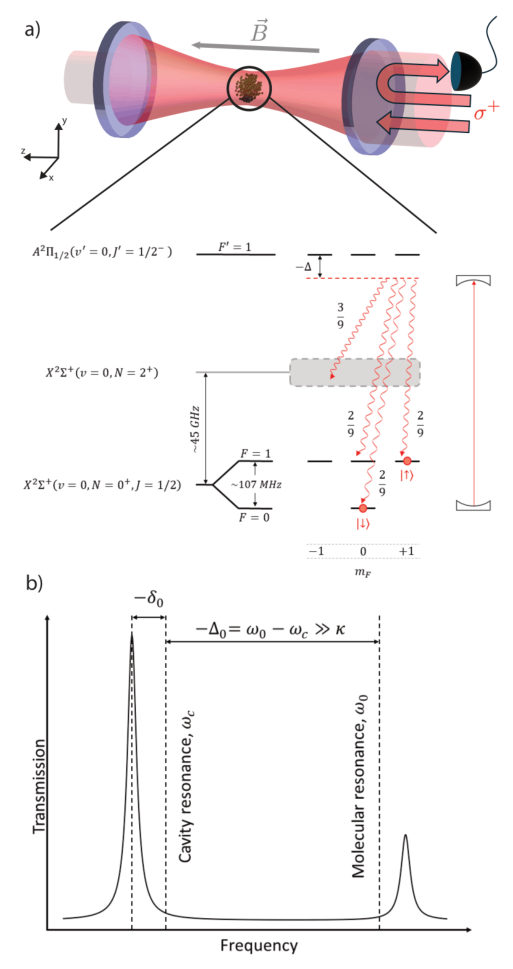
<figcaption class="paper-figure-caption"><b>Fig 1.</b> FIG. 1. Molecules interacting strongly with the light inside a high finesse optical cavity (a) Top: The molecules are op- tically trapped (trapping light not shown) close to the beam waist of the light building up inside the cavity (red). An ex- ternally applied magnetic field defines the quantization axis along the cavity (gray arrow). A photodetector captures the reflected light, which provides a dispersive measurement of the molecular state population. Bottom: Relevant energy levels in SrF. The transition |↓⟩→|e⟩is driven using off resonant light (red arrow) with a frequency close to the dressed cavity resonance. The light detuning from the molecular transition is ∆≫Γ. The possible...</figcaption>
</figure>
<figure class="paper-figure-card">
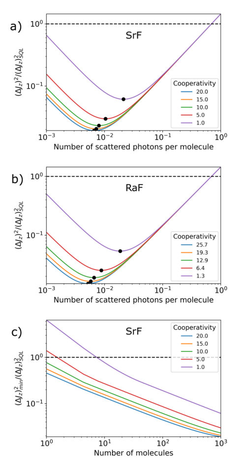
<figcaption class="paper-figure-caption"><b>Fig 2.</b> FIG. 2. (a) Measurement variance normalized to the SQL as a function of the number of scattered photons per molecule for an ensemble of N = 1000 SrF molecules with detection efficiency q = 0.4. Each curve corresponds to a cavity of length ∼5 cm, mode waist 10 µm, and detuning 1 GHz from the molecular resonance. The finesse ranges from ∼7,000 to 140,000, determining the cooperativity and linewidth. Black points indicate the optimal measurement positions where Ra- man noise equals photon shot noise. The dashed line marks the SQL. The corresponding measurement time is on the sub- millisecond scale. (b) Same as (a) for RaF, assuming identical ensemble size and cavity parameters. (c) Minimum...</figcaption>
</figure>
</div>

<p><strong>Summary.</strong> The authors present a novel, non-destructive cavity readout technique for measuring molecular quantum states in ultracold molecules like SrF. By monitoring the shift in a high-finesse optical cavity resonance, they can achieve measurement precision below the Standard Quantum Limit. This method is crucial for enabling high-cycle-rate quantum sensing experiments, especially for sensitive species like radioactive molecules.</p>
<p><strong>Why it may be interesting.</strong> This work represents a state-of-the-art experimental realization of quantum sensing using molecular qubits coupled to cavities, directly relevant to open quantum systems and precision measurement protocols.</p>
<details>
<summary>Detailed structure</summary>
<p><strong>Main problem.</strong> The paper proposes a non-destructive method to measure the population of molecular quantum states for high-precision measurements, particularly for rare or radioactive molecules.</p>
<p><strong>Main result.</strong> The technique achieves measurement variances below the Standard Quantum Limit (SQL) on sub-millisecond timescales while minimizing molecular loss, enabling high-duty cycle measurements.</p>
<p><strong>Method.</strong> The readout utilizes cavity quantum electrodynamics (cavity-QED) by measuring the shift in the high-finesse optical cavity resonance, which is proportional to the molecular population difference.</p>
<p><strong>Model / system.</strong> The system involves ultracold molecules (e.g., SrF) trapped in an optical lattice/MOT and coupled to a high-finesse optical cavity. The measurement relies on dispersive coupling in the far-detuned regime.</p>
<p><strong>Key observables.</strong> Cavity resonance shift ($\delta_0$), molecular population difference ($J_z$), and measurement variance ($\Delta J_z$).</p>
<p><strong>Important parameters / regimes.</strong> Measurement time scale (&lt; 1 ms), Standard Quantum Limit (SQL), single-molecule cooperativity ($\eta$), and molecular loss probability ($p_{	ext{loss}}$).</p>
<p><strong>Assumptions / limitations.</strong> The readout is nearly nondestructive, and the measurement uncertainty is derived using the Cramér-Rao bound based on input-output formalism.</p>
<p><strong>Figures summary.</strong> Figures illustrate the cavity transmission spectrum showing shifts proportional to molecule number, and plots compare the achievable measurement variance against the SQL limit.</p>
<p><strong>Paper structure.</strong> The work progresses from establishing the need for non-destructive readout, detailing the cavity-QED measurement formalism (dispersive shift), quantifying the achievable precision relative to the SQL, and finally describing the necessary prerequisite steps like ultra-cold molecule trapping (CB MOT) and state preparation.</p>
</details>
<details>
<summary>Abstract</summary>
<p>We propose a non-destructive method to measure the population of molecules in a selected rotational-hyperfine state by coupling them to a high-finesse optical cavity. In contrast to traditional techniques, our approach enables fast (less than 1 ms) repeated measurements with reduced heating and losses, and with precision below the standard quantum limit. The method is particularly advantageous for radioactive molecules, systems of high interest for symmetry violation searches, for which production and sample size are limited, and repeated interrogation is essential for improved sensitivity.</p>
</details>
<p><sub><a href="#top">↑ back to top</a></sub></p>

<p><a id="paper-2606.02500"></a></p>
<h3 id="creating-and-probing-spin-squeezed-states-of-molecules">⭐ <a href="http://arxiv.org/abs/2606.02500v1">Creating and Probing Spin-Squeezed States of Molecules</a></h3>
<p><strong>Highlighted author(s):</strong> Ana Maria Rey<br>
<strong>Authors:</strong> Connor M. Holland, Callum L. Welsh, Yukai Lu, David Wellnitz, Xing-Yan Chen, Ana Maria Rey, Lawrence W. Cheuk<br>
<strong>Type:</strong> experiment · <strong>Category:</strong> other · <strong>PDF:</strong> <a href="https://arxiv.org/pdf/2606.02500v1">https://arxiv.org/pdf/2606.02500v1</a><br>
<strong>Analysis basis:</strong> full PDF text, analyzed in chunks
<strong>Topic relevance:</strong> <code>QC/QI experiment</code> <strong>3/5</strong> · <code>analog quantum simulation</code> <strong>3/5</strong> · <code>entanglement &amp; information structure</code> <strong>3/5</strong> · <code>exotic spin models in light-matter</code> <strong>3/5</strong> · <code>non-equilibrium dynamics</code> <strong>3/5</strong> · <code>methods for driven-dissipative</code> <strong>2/5</strong> · <code>quantum measurements</code> <strong>2/5</strong> · <code>quantum optics experiment</code> <strong>2/5</strong> · <code>Rydberg arrays</code> <strong>1/5</strong></p>
<div class="figure-strip-hint">↔ Scroll figures horizontally</div>
<div class="paper-figures-scroll">
<figure class="paper-figure-card">
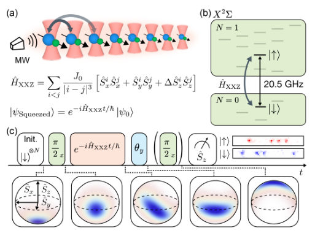
<figcaption class="paper-figure-caption"><b>Fig 1.</b> FIG. 1. Spin-Squeezing in a CaF Molecular Tweezer Array. (a) 1/r3 XXZ models are realized using Floquet engineering via periodic sequences of global microwave (MW) pulses. (b) CaF rotational qubit encoding. (c) Sequence for dynamically creating spin-squeezed states. Molecules are initialized along the y-axis of the collective Bloch sphere via a π/2 pulse about x, after which OAT-like dynamics shear the quantum state and produce squeezing. Rotation pulses applied after squeez- ing re-orient the state before spin-resolved population detec- tion, which measures ˆSz. Specifically, the spin noise Var[ ˆSθ] is measured after a rotation of angle θ about the y-axis, while the spin length requires...</figcaption>
</figure>
<figure class="paper-figure-card">
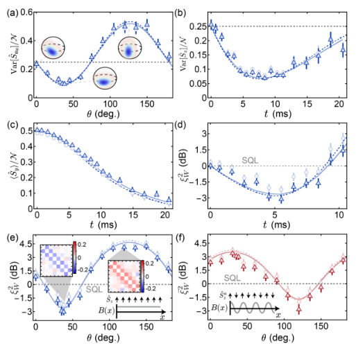
<figcaption class="paper-figure-caption"><b>Fig 2.</b> FIG. 2. XX Squeezing Dynamics and Metrological Perfor- mance. (a) Normalized variance of ˆSnθ versus orientation angle θ, measured after 4.55 ms of XX squeezing. (b) Nor- malized variance of ˆSz versus interaction time t at θ∗. (c) Normalized spin length |⟨ˆSy⟩| versus interaction time t. (d) Wineland parameter ξ2 W versus squeezing duration t at θ∗. (e) ξ2 W versus readout angle θ. Insets show the spin-spin correla- tors ⟨Si zSj z⟩c at θ = 38◦(left) and θ = 120◦(right), revealing predominantly short-ranged correlations. (f) The staggered Wineland parameter ¯ξ2 W versus readout angle θ. Inset: illus- tration of a spatially staggered magnetic field with alternating sign on even and odd sites...</figcaption>
</figure>
<figure class="paper-figure-card">
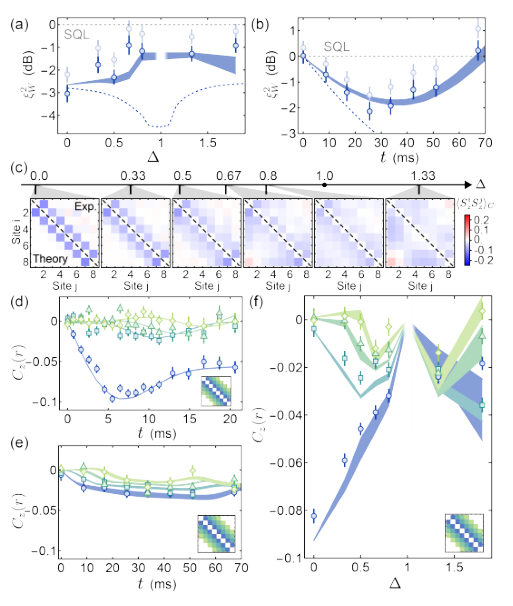
<figcaption class="paper-figure-caption"><b>Fig 3.</b> FIG. 3. Metrological Gain and Correlations for XXZ Squeez- ing. (a) Wineland parameter ξ2 W (t∗, θ∗) at the ideal squeezing optimum versus XXZ anisotropy ∆. (b) ξ2 W (t, θ∗) versus in- teraction time t for ∆= 0.8. For (a,b), the dashed line shows unitary dynamics from an ideal 1/r3 XXZ model. The shaded band shows the predictions of our noise model. (c) Connected spin-spin correlators ⟨Si zSj z⟩c measured at t∗for different ∆ (upper-right: experiment; lower-left: theory). The diagonals are not shown. (d) The mean spin-spin correlator Cz(r) for ∆= 0 versus t, where r is the spin separation. (e) Cz(r) versus t for ∆= 0.8. (f) Cz(r) versus ∆, revealing extended correlations near the Heisenberg...</figcaption>
</figure>
<figure class="paper-figure-card">
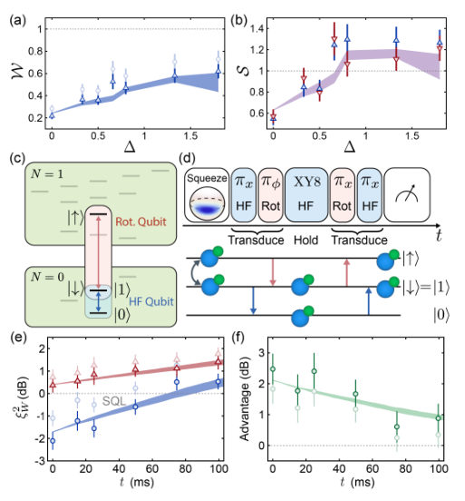
<figcaption class="paper-figure-caption"><b>Fig 4.</b> FIG. 4. Bipartite Entanglement, EPR Steering, and Storage of Spin-Squeezed States. (a) Separability witness W versus ∆. (b) EPR steering witness S versus ∆(red: A→B steering; blue: B→A steering). (c) Hyperfine qubit encoding |0⟩-|1⟩. (d) Squeezing and transduction protocol. Molecules in the ro- tational encoding (|↑⟩-|↓⟩) are squeezed, transferred into the non-interacting hyperfine encoding [25], and stored. For read- out, populations are transferred back to the rotational encod- ing for spin-resolved detection. (e) Wineland parameter ξ2 W versus storage time t. Red (blue) shows data for an unentan- gled coherent spin state (spin-squeezed state). (f) Practical metrological advantage of the...</figcaption>
</figure>
<figure class="paper-figure-card">
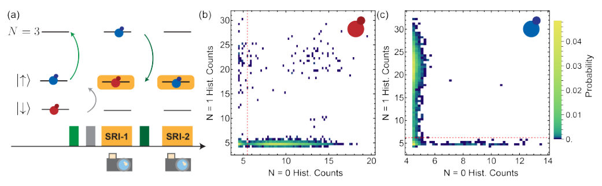
<figcaption class="paper-figure-caption"><b>Fig 5.</b> FIG. 1. SRI Sequence and Histograms: (a) SRI begins with molecules in the rotational encoding. Application of N12 and a MW π-pulse transfers |↑⟩→N = 3 and |↓⟩→|↑⟩. SRI-1 is applied to identify molecules originally in |↓⟩. Next, N32 is applied to return N = 3 →N = 1 before the SRI-2 image, which identifies molecules originally in |↑⟩. (b,c) Fluorescence histograms from the two images with molecules primarily initialized in either |↓⟩(b) or |↑⟩(c) and detection thresholds (red dashed).</figcaption>
</figure>
</div>

<p><strong>Summary.</strong> This paper reports the first observation of spin-squeezed states in polar CaF molecules trapped in optical tweezers. The researchers use engineered dipolar interactions to generate entanglement and demonstrate enhanced sensitivity for quantum sensing. Crucially, they show this quantum advantage can be preserved for long periods by storing the state in robust, non-interacting hyperfine levels.</p>
<p><strong>Why it may be interesting.</strong> This work provides a concrete, scalable platform (molecular optical tweezer arrays) for generating and controlling complex quantum states, directly advancing the field of quantum sensing by demonstrating measurable metrological gains beyond the standard quantum limit.</p>
<details>
<summary>Detailed structure</summary>
<p><strong>Main problem.</strong> The primary goal is to create and probe metrologically useful entangled states, specifically spin-squeezed states, in molecular systems for quantum-enhanced sensing.</p>
<p><strong>Main result.</strong> The authors successfully observed spin-squeezed states in polar CaF molecules and demonstrated that the metrological enhancement persists for up to 100ms even after transferring the state to long-lived hyperfine levels.</p>
<p><strong>Method.</strong> The study uses optical tweezer arrays to trap molecules, employing dynamical decoupling and Floquet engineering to generate and characterize entanglement, followed by site- and spin-resolved measurements.</p>
<p><strong>Model / system.</strong> The physical system is polar CaF molecules trapped in a 1D optical tweezer array. The spin degree of freedom is encoded in rotational levels, which interact via dipolar exchange interactions, modeled by an effective XXZ Hamiltonian.</p>
<p><strong>Key observables.</strong> Wineland squeezing parameter ($\xi^2_W$), bipartite entanglement witness ($W$), EPR steering witness ($S_{A	o B}$), and the decay of metrological gain over time.</p>
<p><strong>Important parameters / regimes.</strong> Metrological gain up to 3.0(3) dB; storage time up to 100ms; interaction strength ($\Delta$ parameter in XXZ model); noise parameters ($\sigma$ for global noise).</p>
<p><strong>Assumptions / limitations.</strong> The analysis relies on the ability to perform site- and spin-resolved readout, and later sections model decoherence using Lindblad master equations and Gaussian noise approximations.</p>
<p><strong>Figures summary.</strong> Figures illustrate the experimental setup, the dynamics of spin squeezing under XXZ interactions, the quantification of entanglement and EPR steering, and the decay of metrological enhancement over storage time.</p>
<p><strong>Paper structure.</strong> The paper progresses from establishing the physical platform (trapping/loading) to generating the entangled state via engineered Hamiltonians (Floquet engineering), characterizing the entanglement (bipartite entanglement, EPR steering), and finally demonstrating the long-term storage of the quantum enhancement in non-interacting hyperfine states.</p>
</details>
<details>
<summary>Abstract</summary>
<p>Polar molecules are a promising platform for quantum-enhanced sensing and precision tests of fundamental physics, owing to their strong long-range dipolar interactions, broad sensitivity to electromagnetic fields, and sensitivity to potential physics beyond the Standard Model. However, the creation of metrologically useful entangled states in molecular systems has remained elusive. Here, we report the first observation of a class of metrologically useful entangled states - spin-squeezed states - in polar CaF molecules trapped in an optical tweezer array. The spin degree of freedom is encoded in rotational levels which are directly coupled by dipolar exchange interactions. By harnessing appropriate dynamical decoupling schemes we observe up to 3.0(3)dB of metrological gain, (2.2(3)dB without measurement correction) from direct exchange interactions. Using Floquet engineering, we further realize richer Hamiltonians that preserve spin squeezing while enabling the development of longer-range quantum correlations. Using site- and spin-resolved measurements we demonstrate that these entangled states enhance sensitivity to both homogeneous and spatially varying fields, and reveal strong non-classical correlations, including bipartite entanglement and Einstein-Podolsky-Rosen steering. Finally, we transfer the spin-squeezed states into long-lived and non-interacting hyperfine states, where the metrological enhancement persists for up to 100ms. Our results establish molecular optical tweezer arrays as a scalable platform for generating, controlling, characterizing, and storing entangled states of molecules, opening new opportunities for quantum-enhanced sensing and precision tests of fundamental physics.</p>
</details>
<p><sub><a href="#top">↑ back to top</a></sub></p>

<p><a id="paper-2606.02283"></a></p>
<h3 id="quantum-optimal-control-of-the-dicke-manifold-in-rydberg-atom-arrays"><a href="http://arxiv.org/abs/2606.02283v1">Quantum optimal control of the Dicke manifold in Rydberg atom arrays</a></h3>
<p><strong>Authors:</strong> Ivy Pannier-Günther, Vikas Buchemmavari, Pablo M. Poggi, Ivan H. Deutsch<br>
<strong>Type:</strong> theory · <strong>Category:</strong> other · <strong>PDF:</strong> <a href="https://arxiv.org/pdf/2606.02283v1">https://arxiv.org/pdf/2606.02283v1</a><br>
<strong>Analysis basis:</strong> full PDF text, analyzed in chunks
<strong>Topic relevance:</strong> 🔥 <code>Rydberg arrays</code> <strong>5/5</strong> · 🔥 <code>analog quantum simulation</code> <strong>4/5</strong> · <code>entanglement &amp; information structure</code> <strong>2/5</strong> · <code>methods for driven-dissipative</code> <strong>2/5</strong> · <code>Dicke superradiance</code> <strong>1/5</strong></p>
<div class="figure-strip-hint">↔ Scroll figures horizontally</div>
<div class="paper-figures-scroll">
<figure class="paper-figure-card">
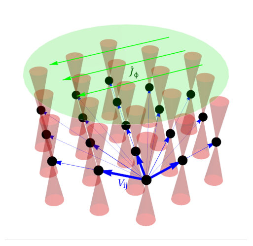
<figcaption class="paper-figure-caption"><b>Fig 1.</b> FIG. 1. Schematic diagram for quantum optimal control in the Dicke manifold. Rydberg atoms in a 2D array of optical tweezers arranged in a close-packed triangular lattice inter- act via resonant dipole-dipole interactions with an interac- tion graph Vij = V N ||i −j||−3 (blue). Control is designed by a time-dependent global field which drives Rabi oscillations, generated by the component collective spin, ˆJϕ (green).</figcaption>
</figure>
<figure class="paper-figure-card">
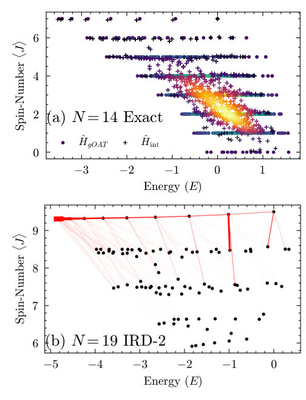
<figcaption class="paper-figure-caption"><b>Fig 2.</b> FIG. 2. (a) Eigenstates of the dipole-dipole interac- tion Hamiltonians ˆHint and ˆHgOAT , on triangular lattices of N = 14 two-level atoms. Eigenstates are plotted for eigenen- ergy E and spin-number expectation ⟨J⟩defined such that ⟨J⟩2 + ⟨J⟩= ⟨J2⟩. In purple-to-green, the gapped OAT, for which J is an exact quantum number. In black-to-orange, the dipole-dipole interaction, which forms a QMBS approxi- mating the Dicke manifold. (b) Eigenstates of ˆHint on H(2) D (using irrep distillation explained in Section II A) for N = 19, with red bonds showing QMBS off-diagonal couplings caused by the control Hamiltonian, ˆHcon = Ω(t) ˆJϕ(t).</figcaption>
</figure>
<figure class="paper-figure-card">
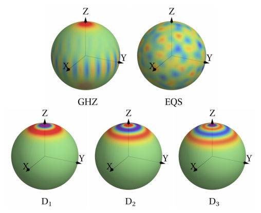
<figcaption class="paper-figure-caption"><b>Fig 3.</b> FIG. 3. Spin Wigner functions for control target states with J = 19</figcaption>
</figure>
<figure class="paper-figure-card">
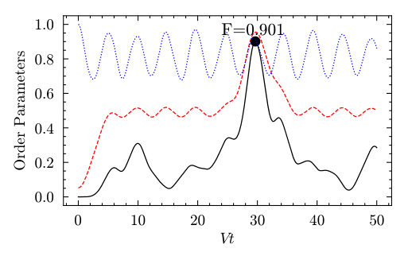
<figcaption class="paper-figure-caption"><b>Fig 4.</b> FIG. 4. Evolution of an initial spin coherent state |↑⟩⊗N</figcaption>
</figure>
<figure class="paper-figure-card">
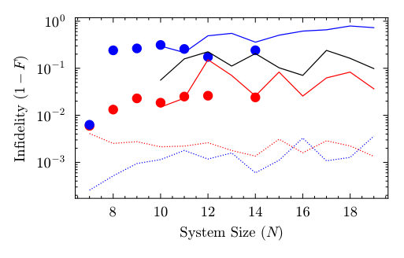
<figcaption class="paper-figure-caption"><b>Fig 5.</b> FIG. 5. Preparation of GHZ states with QOC with global driving. Pulse sequences are found with GrAPE on a Hilbert space truncated according to IRD-1. The resulting infidelities are plotted as a function of the number of qubits. These same pulses are then applied to dynamics on an extended Hilbert space based on IRD-2, and for small systems sizes the exact dynamics on the full Hilbert space to test convergence. Blue: pulses designed without leakage penalty (“na¨ıve control”) on IRD-1 (dotted), IRD-2 (solid), and full Hilbert space (circles). Red: global pulses with leakage penalty on IRD-1 (dotted), IRD-2 (solid), and full Hilbert space for N ≤14 (circles), with K = V T = N + 6. With IRD-2...</figcaption>
</figure>
</div>

<p><strong>Summary.</strong> This paper tackles the challenge of controlling quantum states in Rydberg atom arrays by focusing on the Dicke manifold. It introduces Irrep Distillation (IRD) to manage the exponential complexity arising from finite-range interactions. Through quantum optimal control simulations, the authors show that while global control is effective, local addressing is crucial for maintaining high fidelity when preparing complex, highly entangled quantum states.</p>
<p><strong>Why it may be interesting.</strong> This work directly addresses the practical limitations of scaling quantum simulations in Rydberg arrays by providing a rigorous, computationally feasible method (IRD) to handle the leakage inherent in finite-range interactions.</p>
<details>
<summary>Detailed structure</summary>
<p><strong>Main problem.</strong> The central challenge is achieving high-fidelity quantum control on the Dicke manifold of interacting Rydberg atoms while mitigating leakage errors caused by finite-range dipole-dipole interactions.</p>
<p><strong>Main result.</strong> The authors demonstrate that while global control is possible for simple states, local addressing mechanisms are necessary for achieving high fidelity on complex, highly entangled states like large-$k$ Dicke states.</p>
<p><strong>Method.</strong> The work employs Quantum Optimal Control (QOC) algorithms, specifically Gradient Ascent Pulse Engineering (GrAPE), combined with the novel Irrep Distillation (IRD) technique to truncate the exponentially large Hilbert space into a tractable, linearly scaling subspace.</p>
<p><strong>Model / system.</strong> The system is modeled using Rydberg atoms in 2D tweezer arrays, interacting via dipolar, $1/r^3$ or $1/r^6$ interactions, leading to an XX-Hamiltonian structure. The dynamics are analyzed within the fully symmetric Dicke subspace.</p>
<p><strong>Key observables.</strong> Fidelity ($F$), Quantum Speed Limit (QSL), and population leakage ($\langle \Pi(x) 
angle$) into higher irreducible representations (irreps).</p>
<p><strong>Important parameters / regimes.</strong> System size ($N$), interaction range (dipolar $1/r^3$), and the control pulse parameters ($\Omega(t), \phi(t), \omega(t)$).</p>
<p><strong>Assumptions / limitations.</strong> The primary assumption is that the leakage error can be effectively captured and managed by truncating the Hilbert space using the IRD method, which keeps the dimension linear in $N$.</p>
<p><strong>Figures summary.</strong> Figures compare infidelity and leakage for various control schemes (naive vs. leakage-aware global vs. local) for preparing GHZ and Dicke states, showing the necessity of leakage penalty terms.</p>
<p><strong>Paper structure.</strong> The paper builds from defining the physical model and the leakage problem, introduces the IRD method for subspace truncation, and then applies QOC/GrAPE to compare global vs. local control strategies for achieving target states like GHZ and Dicke states.</p>
</details>
<details>
<summary>Abstract</summary>
<p>The ability to engineer and control quantum states of many-body systems is a central challenge in quantum information science. For a register of $N$ qubits, the full Hilbert space dimension grows exponentially as $2^N$, rendering generic state preparation and control infeasible without exploiting structure or symmetry. A particularly important and physically motivated restriction is to the fully symmetric subspace, spanned by the Dicke states, which are simultaneous eigenstates of collective spin $J=N/2$. Ensembles of Rydberg atoms interacting via electric dipoles in two-dimensional tweezer arrays form a promising platform for achieving such control. However, the finite range of dipole-dipole interactions poses a challenge to generating and controlling the Dicke manifold because the Hamiltonian incurs leakage from the computational subspace. To counteract this leakage, we perform quantum optimal control algorithms on a truncated Hilbert space according to our newly developed method of ``irrep distillation'' (IRD), which captures the process by which the symmetric subspace couples to leakage error-spaces, using only linear-scaling Hilbert dimension. We implement gradient ascent pulse engineering (GrAPE) on control schemes with little or no local addressing, to generate resourceful states like Greenberger-Horne-Zeilinger, Dicke, and extremal quantum states. We benchmark each scheme of IRD-GrAPE for its quantum speed limit (QSL), as well as exactly testing pulse fidelities on small system sizes and predicting fidelities using higher-order IRD on larger systems.</p>
</details>
<p><sub><a href="#top">↑ back to top</a></sub></p>

<p><a id="paper-2606.01005"></a></p>
<h3 id="arbitrarily-precise-arrival-time-measurements-in-quantum-mechanics"><a href="http://arxiv.org/abs/2606.01005v1">Arbitrarily precise arrival time measurements in quantum mechanics</a></h3>
<p><strong>Authors:</strong> Lawrence Frolov<br>
<strong>Type:</strong> theory · <strong>Category:</strong> other · <strong>PDF:</strong> <a href="https://arxiv.org/pdf/2606.01005v1">https://arxiv.org/pdf/2606.01005v1</a><br>
<strong>Analysis basis:</strong> full PDF text, analyzed in chunks
<strong>Topic relevance:</strong> 🔥 <code>quantum measurements</code> <strong>5/5</strong> · 🔥 <code>measurement-induced transitions</code> <strong>4/5</strong> · <code>correlated / nonlocal dissipation</code> <strong>1/5</strong> · <code>driven-dissipative phase transition</code> <strong>1/5</strong> · <code>methods for driven-dissipative</code> <strong>1/5</strong> · <code>non-equilibrium dynamics</code> <strong>1/5</strong></p>
<div class="figure-strip-hint">↔ Scroll figures horizontally</div>
<div class="paper-figures-scroll">
<figure class="paper-figure-card">
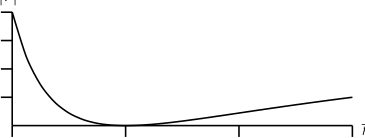
<figcaption class="paper-figure-caption"><b>Fig 1.</b> FIG. 1. Graph of the non-arrival probability |r|2 as a function of p in units of ℏκ.</figcaption>
</figure>
</div>

<p><strong>Summary.</strong> This paper tackles the quantum Zeno effect by constructing a theoretical measurement procedure for particle arrival time that remains physically viable even when precision is taken to the limit. By analyzing the coupled dynamics of the particle and a detector, the authors show that the process effectively reduces to an absorbing boundary condition, thus justifying the use of such conditions to model ideal quantum detectors.</p>
<p><strong>Why it may be interesting.</strong> This work is highly relevant to open quantum systems and quantum measurement theory, providing a rigorous theoretical framework for modeling idealized, irreversible quantum measurements that challenge standard interpretations of quantum evolution.</p>
<details>
<summary>Detailed structure</summary>
<p><strong>Main problem.</strong> The paper addresses the quantum Zeno effect, specifically challenging the notion that arbitrarily precise arrival time measurements in quantum mechanics must result in zero probability of detection.</p>
<p><strong>Main result.</strong> It constructs a measurement procedure that allows for a non-zero probability of arrival even in the limit of arbitrarily precise measurement, demonstrating that the process converges to an absorbing boundary condition.</p>
<p><strong>Method.</strong> The analysis involves constructing a coupled system of Schrödinger equations for the incoming particle and the detector, and then taking specific limits ($\epsilon 	o 0$, $\omega, M 	o \infty$) to derive the effective dynamics.</p>
<p><strong>Model / system.</strong> The model uses an incoming particle wave function interacting with a two-level detector system localized at $x=0$. The dynamics are governed by coupled Schrödinger equations, which simplify in the limit to an effective single-particle equation with an absorbing boundary condition at the detection point.</p>
<p><strong>Key observables.</strong> The probability current $j_x(0)$ and the non-arrival probability $|	ilde{r}|^2$ are key observables used to quantify the measurement outcome.</p>
<p><strong>Important parameters / regimes.</strong> The analysis relies on the limit parameters $\omega, M 	o \infty$ while maintaining a finite ratio $2\hbar\omega/M 	o v_c^2 > 0$, which defines the effective coupling constant $\kappa$.</p>
<p><strong>Assumptions / limitations.</strong> The primary assumption is the validity of the localized detection process and the ability to model the idealized detector using an absorbing boundary condition (ABC).</p>
<p><strong>Figures summary.</strong> Figure 1 illustrates the non-arrival probability $|	ilde{r}|^2$ as a function of momentum $p$, showing its dependence on the apparatus-defined parameter $\hbar\kappa$.</p>
<p><strong>Paper structure.</strong> The paper first sets up the coupled Hamiltonian system describing the particle and detector. It then analyzes the system by taking limits to derive the effective dynamics, which are governed by an absorbing boundary condition. Finally, it calculates the probability flux and compares it to the expected Born rule probability distribution.</p>
</details>
<details>
<summary>Abstract</summary>
<p>The quantum Zeno effect is often regarded as an obstruction to precise arrival time measurements in quantum mechanics. Here, an arbitrarily precise arrival time measurement procedure is constructed using a localized detection process and a suitably chosen boundary condition. The arrival time of an incoming particle is recorded in the position of a clock particle that is emitted by the apparatus upon detection. A non-zero probability of arrival is shown to survive even in the limit as the arrival time measurement procedure is made arbitrarily precise. In this limit, it is also found that the interaction between the incoming particle and the detector is described by an absorbing boundary condition. This justifies the claim of Tumulka that absorbing boundary conditions may be used to model idealized detectors capable of registering particles at the instant of their arrival.</p>
</details>
<p><sub><a href="#top">↑ back to top</a></sub></p>

<p><a id="paper-2606.01146"></a></p>
<h3 id="most-subradiant-bound-photon-pairs-from-chirality-mediated-dispersion-softening"><a href="http://arxiv.org/abs/2606.01146v1">Most Subradiant Bound Photon Pairs from Chirality-Mediated Dispersion Softening</a></h3>
<p><strong>Authors:</strong> Kailin Tan, Xuanbing Jiang, Dong Wang, Saijun Wu<br>
<strong>Type:</strong> theory · <strong>Category:</strong> other · <strong>PDF:</strong> <a href="https://arxiv.org/pdf/2606.01146v1">https://arxiv.org/pdf/2606.01146v1</a><br>
<strong>Analysis basis:</strong> full PDF text, analyzed in chunks
<strong>Topic relevance:</strong> 🔥 <code>correlated / nonlocal dissipation</code> <strong>4/5</strong> · <code>Dicke superradiance</code> <strong>3/5</strong> · <code>analog quantum simulation</code> <strong>3/5</strong> · <code>methods for driven-dissipative</code> <strong>3/5</strong> · <code>Tavis-Cummings &amp; cavity-many-emitter</code> <strong>2/5</strong> · <code>driven-dissipative phase transition</code> <strong>2/5</strong> · <code>free-space correlated emission</code> <strong>2/5</strong> · <code>non-equilibrium dynamics</code> <strong>2/5</strong> · <code>Keldysh / 2PI / non-Gaussian methods</code> <strong>1/5</strong> · <code>correlated cavity matter</code> <strong>1/5</strong> · <code>entanglement &amp; information structure</code> <strong>1/5</strong> · <code>non-equilibrium universality</code> <strong>1/5</strong></p>
<div class="figure-strip-hint">↔ Scroll figures horizontally</div>
<div class="paper-figures-scroll">
<figure class="paper-figure-card">
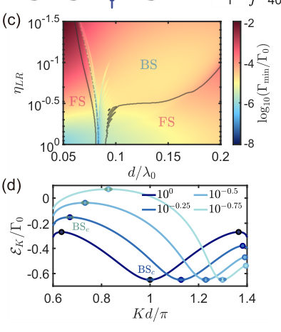
<figcaption class="paper-figure-caption"><b>Fig 1.</b> FIG. 1. (a) Schematic of the chiral waveguide QED model. (b) Probability distribution of a subradiant BSe for N = 40, d = 0.15λ0 and ηLR = 10−0.75. (c) Decay rate distribution of the most subradiant two-excitation state with respect to the lattice spacing d and the asymmetry parameter ηLR for N = 100. The solid curves separate regions where either the FS or the BS is the most subradiant. The dashed dotted curve corresponds to the emergence of a BS band inflection point with α2 = 0 (cf. Fig. 3). (d) BS dispersion relation for different values of ηLR indicated by the legend with d = 0.15λ0. Circles show the energies of BSc and BSe near the band extrema for an N = 100 array.</figcaption>
</figure>
<figure class="paper-figure-card">
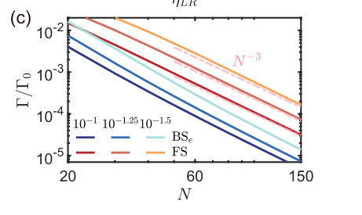
<figcaption class="paper-figure-caption"><b>Fig 2.</b> FIG. 2. (a) Decay rates of FS (red), BSe (blue), and BSc (green) as a function of ηLR with N = 100, where the values of d/λ0 are specified in the legend. (b) Dependence of |α2e| (blue) and se (red) on ηLR, with d/λ0 indicated by the legend. The extraction of se utilizes the BSe results from (a) for N = 100. (c) Decay rate scaling of BSe (blue) and FS (red) with respect to the atom number N for three different ηLR values at a fixed spacing d = 0.15λ0. The dash-dotted pink lines denote the analytical scaling of the FS decay rates.</figcaption>
</figure>
<figure class="paper-figure-card">
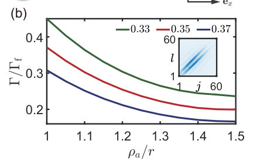
<figcaption class="paper-figure-caption"><b>Fig 3.</b> FIG. 4. (a) Schematic of an atom array coupled to a cylin- drical optical nanofiber. The coupling between the elliptical atomic dipoles and the spin-momentum locked guided mode leads to chiral emission. (b) Decay rates of the chiral BSs for an N = 60 array, with d/λf = 0.33 (green), 0.35 (red), and 0.37 (blue). Inset: probability distribution of a subradiant chiral BS, illustrated for parameters d = 0.35λf, ρa = r, and N = 60.</figcaption>
</figure>
<figure class="paper-figure-card">
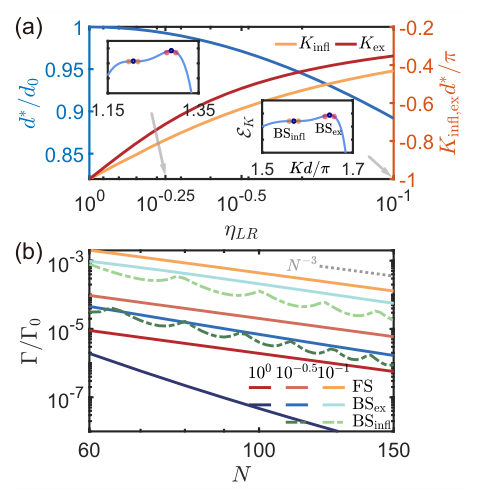
<figcaption class="paper-figure-caption"><b>Fig 4.</b> FIG. 3. (a) Blue solid curve is the critical spacing where the cubic band emerges for a given chirality. The inflection point and extremum point are represented by the yellow and red curves (shifted into the first Brillouin zone), respectively. Insets show the BS dispersion relations for ηLR = 10−0.25 and ηLR = 10−1, where the circles mark BSinfl (yellow) and BSex (red) for finite arrays with N = 100. (b) Decay rate scaling of FS, BSex, and BSinfl for ηLR = 1, 10−0.5 and 10−1 (indicated by the legend), evaluated at the critical spacing d = d∗for each chirality. The dotted line provides a reference for the N −3 dependence.</figcaption>
</figure>
</div>

<p><strong>Summary.</strong> This paper theoretically analyzes subradiant two-excitation states in an atom array coupled to a waveguide via chiral interactions. It demonstrates that the chirality induces a 'dispersion softening' mechanism that suppresses the state's decay rate. This suppression makes the bound photon pairs the most subradiant states, a crucial finding for quantum light sources.</p>
<p><strong>Why it may be interesting.</strong> This work provides a detailed theoretical understanding of how engineered chiral couplings can fundamentally alter the decay dynamics of quantum emitters, leading to highly robust, long-lived quantum states.</p>
<details>
<summary>Detailed structure</summary>
<p><strong>Main problem.</strong> The study investigates the conditions under which Bound Photon Pairs (BSs) become the most subradiant two-excitation states compared to Free-Fermion states (FSs) in a chirally coupled atom array.</p>
<p><strong>Main result.</strong> Chirality-mediated dispersion softening suppresses the band curvature $|\alpha_2|$, leading to a decay rate scaling $\Gamma \sim |\alpha_2|/N^3$, which enhances subradiance and confirms BSs as the most subradiant states.</p>
<p><strong>Method.</strong> The analysis involves deriving effective Hamiltonians, diagonalizing them to find bound eigenstates, and calculating decay rates using the Born-Markov approximation.</p>
<p><strong>Model / system.</strong> The system is an array of N two-level atoms chirally coupled to a one-dimensional waveguide reservoir, modeled using an effective non-Hermitian Hamiltonian.</p>
<p><strong>Key observables.</strong> Subradiance (decay rate $\Gamma$), band curvature $|\alpha_2|$, Fidelity ($F$), and the ratio of decay rates between BSs and FSs.</p>
<p><strong>Important parameters / regimes.</strong> Chirality parameter ($\eta_{	ext{LR}}$), atom number ($N$), and the lattice spacing ($d$).</p>
<p><strong>Assumptions / limitations.</strong> The analysis relies on approximations such as treating boundary scattering as negligible for large N and using the Born-Markov approximation for decay rate calculations.</p>
<p><strong>Figures summary.</strong> Figures illustrate the comparison of decay rates (FS vs. BS) vs. chirality, the dispersion relation of BSs within the continuum gap, and the dependence of subradiance on disorder strength.</p>
<p><strong>Paper structure.</strong> The paper systematically develops the theory by deriving the effective Hamiltonian, analyzing single-excitation (FS) and two-excitation (BS) states separately, and finally proving the scaling laws for the decay rates based on dispersion softening.</p>
</details>
<details>
<summary>Abstract</summary>
<p>We study the subradiant bound states (BSs) in a two-level atom array chirally coupled to a one-dimensional waveguide. We demonstrate that the chiral interaction can drive BSs to become the most subradiant two-excitation states across a wide spacing range. This phenomenon is rooted in a mechanism of chirality-mediated dispersion softening, where the BS band distortion suppresses the band curvature $|α_2|$ at an extremum point. We rigorously prove that the BS decay rate follows the scaling $Γ\sim |α_2|/N^3$, revealing that the reduction of $|α_2|$ is key to suppressing emission and enhancing subradiance. We also show the existence of chiral BSs in a realistic nanofiber interface.</p>
</details>
<p><sub><a href="#top">↑ back to top</a></sub></p>

<p><a id="paper-2606.00580"></a></p>
<h3 id="non-equilibrium-glassy-arrest-and-discontinuous-transitions-at-avoided-quantum-critical-points"><a href="http://arxiv.org/abs/2606.00580v1">Non-equilibrium glassy arrest and discontinuous transitions at avoided quantum critical points</a></h3>
<p><strong>Authors:</strong> J J Pulikkotil<br>
<strong>Type:</strong> theory · <strong>Category:</strong> statistical mechanics · <strong>PDF:</strong> <a href="https://arxiv.org/pdf/2606.00580v1">https://arxiv.org/pdf/2606.00580v1</a><br>
<strong>Analysis basis:</strong> full PDF text, analyzed in chunks
<strong>Topic relevance:</strong> 🔥 <code>driven-dissipative phase transition</code> <strong>4/5</strong> · 🔥 <code>non-equilibrium dynamics</code> <strong>4/5</strong> · 🔥 <code>non-equilibrium universality</code> <strong>4/5</strong> · <code>Keldysh / 2PI / non-Gaussian methods</code> <strong>3/5</strong> · <code>methods for driven-dissipative</code> <strong>3/5</strong> · <code>analog quantum simulation</code> <strong>2/5</strong> · <code>correlated / nonlocal dissipation</code> <strong>2/5</strong> · <code>Frenkel-Kontorova</code> <strong>1/5</strong> · <code>entanglement &amp; information structure</code> <strong>1/5</strong> · <code>scars &amp; prethermalization</code> <strong>1/5</strong></p>
<div class="figure-strip-hint">↔ Scroll figures horizontally</div>
<div class="paper-figures-scroll">
<figure class="paper-figure-card">
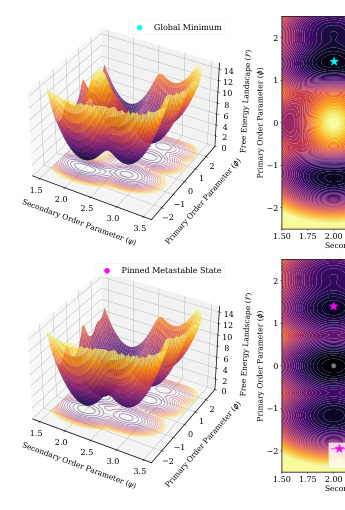
<figcaption class="paper-figure-caption"><b>Fig 1.</b> Figure 1: Phenomenological visualization of the constraint-induced free energy landscape F across the primary (ϕ) and secondary (ψ) order parameters. (a) Top panel, Strong Field Regime (RA = 15): Under an intense external con- straint field, the macroscopic gradient forces the order parameter trajectory to- ward an orthogonal minimum. (b) Bottom panel, Zero Field Regime (RA = 0): Upon removal of the external field, emergent high-frequency quenched barri- ers block the return trajectory. Lacking sufficient thermal activation (Teff) to overcome these microscopic traps, the system undergoes non-equilibrium glassy arrest.</figcaption>
</figure>
<figure class="paper-figure-card">
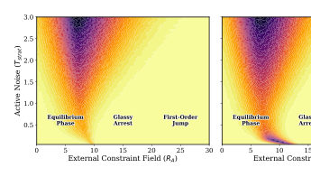
<figcaption class="paper-figure-caption"><b>Fig 2.</b> Figure 2: Persistence probability phase diagrams across active noise (Tstrat) and external constraint field intensity (RA). A U-shaped region of phase instability forms near the critical threshold. This trap deepens and widens significantly as quenched microscopic ruggedness (K) increases, dominating the macroscopic free-energy flattening and increasing the density of metastable states (configu- rational entropy).</figcaption>
</figure>
<figure class="paper-figure-card">
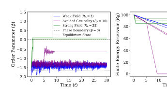
<figcaption class="paper-figure-caption"><b>Fig 3.</b> Figure 3: Non-equilibrium kinetic trajectories of the order parameter field. Left panel: First-order discontinuous trajectories of the effective scalar field under varying constraint fields. Middle panel: Corresponding strain energy and resource depletion of the finite dissipative bath (RB). Right panel: Divergence of relaxation time precisely at the avoided critical threshold (RA ≈10). This critical slowing down is driven by the pinning of the spatial correlation length against localized quenched traps.</figcaption>
</figure>
<figure class="paper-figure-card">
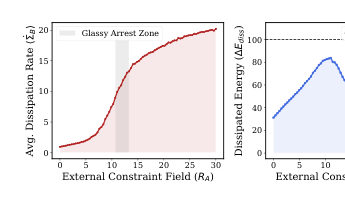
<figcaption class="paper-figure-caption"><b>Fig 4.</b> Figure 4: Thermodynamic signature and phase stability. Left panel: Diver- gence of the average entropy production rate (⟨˙ΣB⟩). Middle panel: Total dissipated energy (∆Ediss). The cost peaks non-monotonically precisely during the glassy arrest regime, while the first-order discontinuous jump (RA &gt; 20) bypasses the flat free-energy region entirely. Right panel: Persistence prob- ability mapping the characteristic U-shaped region of phase instability caused by disorder-induced metastability.</figcaption>
</figure>
</div>

<p><strong>Summary.</strong> This theoretical work models non-equilibrium dynamics in disordered systems near avoided quantum critical points using a generalized Ginzburg-Landau framework. It demonstrates that glassy arrest arises from disorder-induced trapping when the system's free energy flattens. Conversely, strong external fields can force the system into a rapid, discontinuous phase transition, bypassing the glassy state.</p>
<p><strong>Why it may be interesting.</strong> The concepts of non-equilibrium dynamics, FDT violation, and glassy arrest are central to understanding open quantum systems and many-body relaxation processes, making it relevant for AMO physics and open quantum systems.</p>
<details>
<summary>Detailed structure</summary>
<p><strong>Main problem.</strong> The paper investigates the non-equilibrium dynamics of order parameters subjected to external constraints, focusing on the mechanisms driving glassy arrest and discontinuous phase transitions near avoided quantum critical points.</p>
<p><strong>Main result.</strong> It establishes a generic mechanism showing that glassy arrest occurs due to disorder-induced trapping when the macroscopic free energy flattens, while high external fields can induce a thermodynamically efficient discontinuous jump that bypasses this metastable region.</p>
<p><strong>Method.</strong> The analysis uses a continuum field theory approach, modeling dynamics via a stochastic Ginzburg-Landau equation, and analyzing non-equilibrium observables like dissipation and persistence probability.</p>
<p><strong>Model / system.</strong> The system is modeled using a spatially extended Belitz-Kirkpatrick-Vojta framework for an order parameter $\phi(\mathbf{r}, t)$, incorporating a macroscopic Landau-Ginzburg free energy functional and a quenched disorder potential.</p>
<p><strong>Key observables.</strong> Dissipation peak, violation of the fluctuation-dissipation theorem (FDT), total dissipated energy ($\Delta E_{diss}$), and phase persistence probability.</p>
<p><strong>Important parameters / regimes.</strong> External constraint field ($R_A$), disorder strength ($K$), and the effective temperature/noise scale ($T_{eff}$).</p>
<p><strong>Assumptions / limitations.</strong> The analysis assumes adiabatic decoupling, where local fluctuations relax much faster than the global energy reservoir depletion ($  au_{fluct} \ll  au_{depletion}$).</p>
<p><strong>Figures summary.</strong> Figures visualize the constraint-induced free energy landscape, map phase persistence probability showing sharp drops at avoided critical thresholds, and track non-equilibrium kinetic trajectories under varying fields.</p>
<p><strong>Paper structure.</strong> The paper progresses by defining the complex free energy landscape, analyzing the system's response in different field regimes (linear, avoided critical, high field), and deriving scaling relations for dissipation and arrest mechanisms.</p>
</details>
<details>
<summary>Abstract</summary>
<p>The non-equilibrium dynamics of an order parameter confined by an external constraint field are investigated within a spatially extended Belitz-Kirkpatrick-Vojta framework. A generic non-monotonic dissipation peak arises at avoided criticality due to the interplay between macroscopic free-energy flattening and microscopic disorder-induced trapping. Near this regime, suppressed deterministic forces enhance activated trapping, leading to an effective violation of the fluctuation-dissipation theorem and ultimate glassy arrest. At higher fields, the system undergoes a discontinuous phase transition that bypasses this flat free-energy region. These explicit analytical scalings establish a generic mechanism for non-equilibrium arrest in disordered condensed matter systems.</p>
</details>
<p><sub><a href="#top">↑ back to top</a></sub></p>

<p><a id="paper-2606.01254"></a></p>
<h3 id="stabilization-of-granovskii-zhedanov-scars-of-the-xyz-quantum-spin-chain-via-non-hermitian-spin-relaxation"><a href="http://arxiv.org/abs/2606.01254v1">Stabilization of Granovskii-Zhedanov scars of the XYZ quantum spin chain via non-Hermitian spin relaxation</a></h3>
<p><strong>Authors:</strong> Dhiman Bhowmick<br>
<strong>Type:</strong> theory · <strong>Category:</strong> other · <strong>PDF:</strong> <a href="https://arxiv.org/pdf/2606.01254v1">https://arxiv.org/pdf/2606.01254v1</a><br>
<strong>Analysis basis:</strong> full PDF text, analyzed in chunks
<strong>Topic relevance:</strong> 🔥 <code>scars &amp; prethermalization</code> <strong>4/5</strong> · <code>correlated / nonlocal dissipation</code> <strong>3/5</strong> · <code>driven-dissipative phase transition</code> <strong>3/5</strong> · <code>methods for driven-dissipative</code> <strong>3/5</strong> · <code>non-equilibrium dynamics</code> <strong>3/5</strong> · <code>non-equilibrium universality</code> <strong>2/5</strong> · <code>Keldysh / 2PI / non-Gaussian methods</code> <strong>1/5</strong> · <code>Kondo &amp; dissipative impurity</code> <strong>1/5</strong> · <code>analog quantum simulation</code> <strong>1/5</strong> · <code>entanglement &amp; information structure</code> <strong>1/5</strong> · <code>exotic spin models in light-matter</code> <strong>1/5</strong> · <code>spintronics-quantum-optics interface</code> <strong>1/5</strong></p>
<div class="figure-strip-hint">↔ Scroll figures horizontally</div>
<div class="paper-figures-scroll">
<figure class="paper-figure-card">
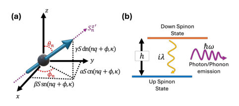
<figcaption class="paper-figure-caption"><b>Fig 1.</b> FIG. 1. (a) Direction of the spin (denoted by the blue arrow) at the n-th site in a GZ state. This schematic illustrates the parameters θn and ϕn appearing in Eq. 3, together with the corresponding expectation value of the components of the local spin operator ˆSn. It also indicates the z′-axis, which is aligned with the local spin direction, such that the spin component along this axis is denoted by Sz′ n . (b) Schematic of the spin relaxation process. In the presence of an external magnetic field |hn| = h, the local degenerate up and down spinon levels split and are separated by an energy gap h. The non-Hermitian term proportional to iλ physically represents spinon decay from the down...</figcaption>
</figure>
<figure class="paper-figure-card">
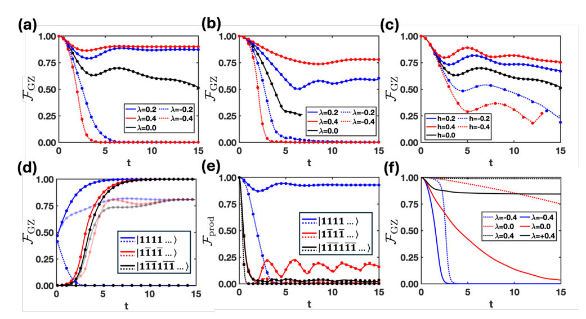
<figcaption class="paper-figure-caption"><b>Fig 2.</b> FIG. 2. Numerical plots showing the fidelity as a function of time for different scenarios. In all the simulations, the system is initiated with the GZ state except for the figures (d) and (e). Additionally, in all the simulations, the fidelity of the time-evolved state is measured relative to the GZ state, except for the figure (e). (a) Fidelity dynamics under the Hamiltonian in Eq. 10 with onsite perturbation µ = 0.3, shown for different values of the non-Hermitian strength λ, with the system initialized in the GZ state. (b) Fidelity dynamics under the Hamiltonian in Eq. 10 with hopping perturbation t = 0.3 (and zero onsite perturbation), shown for different values of the non-Hermitian...</figcaption>
</figure>
<figure class="paper-figure-card">
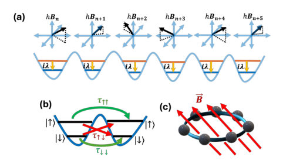
<figcaption class="paper-figure-caption"><b>Fig 3.</b> FIG. 3. (a) Schematic of the experimental arrangement using an optical lattice. A periodic potential is illustrated, within which the atoms are confined. A site-dependent magnetic field hBn is applied at each site n along the Sz′ n direction, aligned with the local magnetization of the GZ state. This field lifts the spin degeneracy, yielding lower-energy down-spinon (or- ange) and higher-energy up-spinon (blue) states. Coupling to the environment induces relaxation from the down-spinon to the up-spinon state at a rate λ. (b) Schematic of the hopping coefficients in the Hubbard model. In the absence of a mag- netic field, the spin-up and spin-down degrees of freedom are degenerate; they are...</figcaption>
</figure>
<figure class="paper-figure-card">
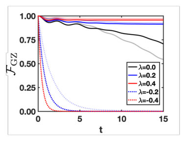
<figcaption class="paper-figure-caption"><b>Fig 4.</b> FIG. 4. Lindbladian dynamics governed by the system Hamiltonian ˆH0, in the presence of an onsite perturbation µ = 0.3, and with the Lindblad jump operator defined in Eq. 30. Results are shown for finite system sizes N = 3 (trans- parent lines) and N = 6 (dense lines). The parameter q is fixed to q = 4K(κ)/3, while the remaining system parame- ters are set to κ = 0.5, γ = 0.8, and S = 1. The simulation result for λ = −0.4 and system size N = 3 is not visible, as it lies below the blue dashed curve corresponding to λ = −0.2 for the system size N = 6.</figcaption>
</figure>
<figure class="paper-figure-card">
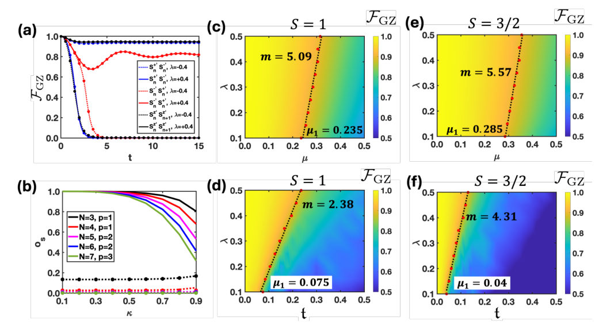
<figcaption class="paper-figure-caption"><b>Fig 5.</b> FIG. 5. (a) Stabilization of GZ state using alternative non-Hermitian terms in the presence of global onsite perturbation µ = 0.3. The simulations are done for parameters κ = 0.5, γ = 0.8, q = 4K(κ)/5. (b) The overlap os of the spin-1 states |1111 . . .⟩, |1¯11¯1 . . .⟩, and |1¯1¯11¯1¯1 . . .⟩with the GZ scar subspace for finite periodic chain of length N, is shown as a function of κ, represented by solid lines, dashed lines, and dots, respectively. The different colored plots correspond to the GZ scar subspace for different values of q, which is tuned by varying the parameters N and p, since q = 4pK(κ)</figcaption>
</figure>
</div>

<p><strong>Summary.</strong> This paper tackles the problem of stabilizing fragile GZ scar states in the XYZ quantum spin chain against environmental noise. It demonstrates that introducing engineered non-Hermitian spin relaxation terms can robustly stabilize these states, preventing complete thermalization. The findings provide a theoretical roadmap for realizing and controlling quantum coherence in complex, open quantum systems.</p>
<p><strong>Why it may be interesting.</strong> This work directly addresses the challenge of maintaining fragile quantum coherence in realistic, dissipative environments, which is a central theme in modern quantum simulation and open quantum systems theory.</p>
<details>
<summary>Detailed structure</summary>
<p><strong>Main problem.</strong> The paper investigates how to stabilize Granovskii-Zhedanov (GZ) scar states in the XYZ quantum spin chain against inevitable perturbations that typically cause thermalization.</p>
<p><strong>Main result.</strong> The inclusion of effective non-Hermitian spin relaxation processes, which can arise from physical mechanisms like Purcell-enhanced emission, substantially stabilizes the GZ states, leading to a non-equilibrium steady state.</p>
<p><strong>Method.</strong> The study employs theoretical analysis, including deriving equivalent Lindblad descriptions and analyzing dynamics using techniques like infinite time-evolving block decimation (iTEBD) and fidelity measurements.</p>
<p><strong>Model / system.</strong> The primary system is the spin-S XYZ quantum spin chain. The dynamics are modeled using the XYZ Hamiltonian, augmented by a helical magnetic field term and a non-Hermitian spin relaxation term ($\hat{H}_\lambda$).</p>
<p><strong>Key observables.</strong> Fidelity ($F_{GZ}$), which measures the overlap of the time-evolved state with the initial GZ state.</p>
<p><strong>Important parameters / regimes.</strong> Non-Hermitian strength ($\lambda$), perturbation strengths ($\mu$ for onsite, $t$ for hopping), and the spin quantum number ($S$).</p>
<p><strong>Assumptions / limitations.</strong> The ideal XYZ Hamiltonian is not experimentally realizable, necessitating stabilization protocols. The non-Hermitian term is assumed to originate from physical relaxation processes.</p>
<p><strong>Figures summary.</strong> Figures illustrate fidelity dynamics comparing decay ($\lambda=0$) to saturation ($\lambda>0$) under different perturbations, and phase diagrams mapping stability boundaries in the $(\mu, \lambda)$ and $(t, \lambda)$ parameter spaces.</p>
<p><strong>Paper structure.</strong> The paper first establishes the GZ state's properties under ideal conditions, then analyzes the decay due to perturbations ($\hat{H}_P$). It introduces stabilization via the helical field ($\hat{H}_h$) and, crucially, the non-Hermitian relaxation ($\hat{H}_\lambda$). The analysis progresses from general theory to specific numerical simulations and finally connects the model to physical realizations like optical lattices and the Lindblad master equation.</p>
</details>
<details>
<summary>Abstract</summary>
<p>The Granovskii-Zhedanov (GZ) states are exact scar states of the spin-S XYZ chain for S &gt;= 1. As a result, local quantum information encoded in a GZ state remains preserved under the unitary dynamics of the XYZ Hamiltonian; thus, these states evade thermalization and violate ergodicity despite the system being otherwise nonintegrable and chaotic. However, in realistic experimental settings, the realization of an ideal XYZ Hamiltonian is not possible, as perturbations are inevitable. These perturbations ultimately lead to the decay and thermalization of the GZ state. We study the stability and dynamics of GZ states in the presence of generic perturbations and propose physically realistic mechanisms to stabilize them. We show that the product structure of the GZ state allows its lifetime to be enhanced in the presence of an external helical magnetic field, which slows down thermalization but does not prevent it at long times. We further demonstrate that the inclusion of effective non-Hermitian spin relaxation processes can substantially stabilize the GZ states, leading to a nonequilibrium steady state with finite fidelity with GZ state. Such dissipative processes can naturally originate from mechanisms such as Purcell-enhanced spontaneous emission or spin-lattice relaxation in the presence of the helical magnetic field. Using infinite time-evolving block decimation and exact time evolution, we systematically analyze the dynamics and robustness of the GZ states in the perturbed non-Hermitian XYZ model. To connect with experimental platforms, we introduce a Hubbard model that maps onto the XYZ spin system and propose that ring-shaped optical lattices may provide a viable route for realizing and stabilizing GZ states. Finally, we present an equivalent Lindblad description of the effective non-Hermitian dynamics.</p>
</details>
<p><sub><a href="#top">↑ back to top</a></sub></p>

<p><a id="paper-2606.02555"></a></p>
<h3 id="strong-to-weak-spontaneous-symmetry-breaking"><a href="http://arxiv.org/abs/2606.02555v1">Strong-to-Weak Spontaneous Symmetry Breaking</a></h3>
<p><strong>Authors:</strong> Chong Wang<br>
<strong>Type:</strong> theory · <strong>Category:</strong> statistical mechanics · <strong>PDF:</strong> <a href="https://arxiv.org/pdf/2606.02555v1">https://arxiv.org/pdf/2606.02555v1</a><br>
<strong>Analysis basis:</strong> full PDF text, analyzed in chunks
<strong>Topic relevance:</strong> 🔥 <code>entanglement &amp; information structure</code> <strong>4/5</strong> · <code>correlated / nonlocal dissipation</code> <strong>3/5</strong> · <code>driven-dissipative phase transition</code> <strong>3/5</strong> · <code>methods for driven-dissipative</code> <strong>3/5</strong> · <code>non-equilibrium dynamics</code> <strong>3/5</strong> · <code>non-equilibrium universality</code> <strong>3/5</strong> · <code>Keldysh / 2PI / non-Gaussian methods</code> <strong>2/5</strong> · <code>analog quantum simulation</code> <strong>2/5</strong> · <code>Kondo &amp; dissipative impurity</code> <strong>1/5</strong></p>
<div class="figure-strip-hint">↔ Scroll figures horizontally</div>
<div class="paper-figures-scroll">
<figure class="paper-figure-card">
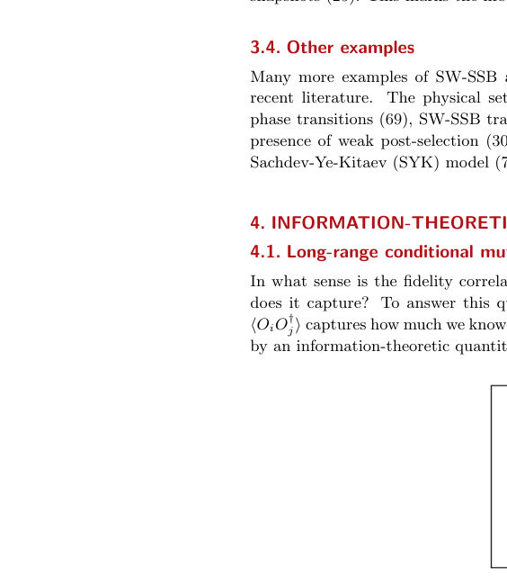
<figcaption class="paper-figure-caption"><b>Fig 1.</b> Figure 1</figcaption>
</figure>
<figure class="paper-figure-card">
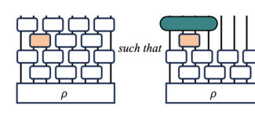
<figcaption class="paper-figure-caption"><b>Fig 2.</b> Figure 2</figcaption>
</figure>
</div>

<p><strong>Summary.</strong> This review introduces Strong-to-Weak Spontaneous Symmetry Breaking (SW-SSB) as a unifying concept for analyzing phases in open quantum systems. It shows that SW-SSB connects seemingly disparate fields, including topological order and emergent hydrodynamics, by using advanced tools like fidelity correlators and CMI. The work is crucial for understanding symmetry breaking in complex, realistic, and dissipative quantum matter.</p>
<p><strong>Why it may be interesting.</strong> It provides a powerful, modern lens for understanding symmetry breaking in non-equilibrium and open quantum systems, linking concepts from statistical mechanics to quantum information theory.</p>
<details>
<summary>Detailed structure</summary>
<p><strong>Main problem.</strong> The paper develops Strong-to-Weak Spontaneous Symmetry Breaking (SW-SSB) as a unifying framework to study phases of matter in open quantum or classical systems.</p>
<p><strong>Main result.</strong> SW-SSB provides a comprehensive connection between topological orders, emergent hydrodynamics, and information-theoretic characterizations of mixed-state phases.</p>
<p><strong>Method.</strong> The analysis employs advanced concepts from quantum information theory, comparing standard correlation functions with fidelity correlators and conditional mutual information.</p>
<p><strong>Model / system.</strong> The framework applies to general open quantum systems (described by density matrices $\rho$) and classical stochastic systems, using examples like the Ising ferromagnet in mixed states.</p>
<p><strong>Key observables.</strong> Fidelity correlator ($\langle O 
angle_F$), Conditional Mutual Information (CMI), and the fidelity susceptibility ($\chi_
ho^F$).</p>
<p><strong>Important parameters / regimes.</strong> The distinction between strong symmetry (pure state) and weak symmetry (mixed state) breaking, and the role of the system size ($N$) or region size ($A$).</p>
<p><strong>Assumptions / limitations.</strong> The definition of SW-SSB is a conceptual framework connecting various physical ideas, and local measurements may not capture global properties.</p>
<p><strong>Figures summary.</strong> Not specified (The notes summarize concepts rather than describing specific figures).</p>
<p><strong>Paper structure.</strong> The review progresses by defining the core concept (SW-SSB), detailing its origins in statistical mechanics and information theory, presenting diagnostic tools (fidelity correlators, CMI), and finally unifying its application across topological order, hydrodynamics, and experimental platforms.</p>
</details>
<details>
<summary>Abstract</summary>
<p>Strong-to-weak spontaneous symmetry breaking (SW-SSB) has recently emerged as a useful framework for studying phases of matter in open systems, quantum or classical. Beginning with the simple idea of extending symmetry breaking to general mixed states, and the familiar equivalence between canonical and grand-canonical ensembles in statistical mechanics, the concept has grown into a unifying perspective connecting many different ideas in physics, including topological orders, emergent hydrodynamics, and information-theoretic characterization of phases of matter. This review provides a bird's-eye view of some of these recent developments.</p>
</details>
<p><sub><a href="#top">↑ back to top</a></sub></p>

<p><a id="paper-2606.01797"></a></p>
<h3 id="dynamical-frustration-in-space-time-metamaterials"><a href="http://arxiv.org/abs/2606.01797v1">Dynamical frustration in space-time metamaterials</a></h3>
<p><strong>Authors:</strong> Rupesh Mahore, Oleksandr Gamayun, Guillaume Noetinger, Romain Fleury, Corentin Coulais, Benjamin Apffel<br>
<strong>Type:</strong> both · <strong>Category:</strong> other · <strong>PDF:</strong> <a href="https://arxiv.org/pdf/2606.01797v1">https://arxiv.org/pdf/2606.01797v1</a><br>
<strong>Analysis basis:</strong> full PDF text, analyzed in chunks
<strong>Topic relevance:</strong> 🔥 <code>driven-dissipative phase transition</code> <strong>4/5</strong> · <code>analog quantum simulation</code> <strong>3/5</strong> · <code>methods for driven-dissipative</code> <strong>3/5</strong> · <code>non-equilibrium dynamics</code> <strong>3/5</strong> · <code>non-equilibrium universality</code> <strong>3/5</strong> · <code>correlated / nonlocal dissipation</code> <strong>2/5</strong> · <code>Frenkel-Kontorova</code> <strong>1/5</strong> · <code>Keldysh / 2PI / non-Gaussian methods</code> <strong>1/5</strong> · <code>correlated cavity matter</code> <strong>1/5</strong> · <code>entanglement &amp; information structure</code> <strong>1/5</strong> · <code>exotic spin models in light-matter</code> <strong>1/5</strong></p>
<div class="figure-strip-hint">↔ Scroll figures horizontally</div>
<div class="paper-figures-scroll">
<figure class="paper-figure-card">
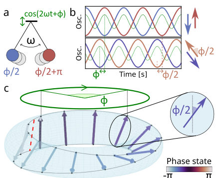
<figcaption class="paper-figure-caption"><b>Fig 1.</b> FIG. 1. Concept of dynamical frustration. (a) Parametric pumping of an oscillator and the two subharmonic limit cycles with opposite phase ϕ/2 and ϕ/2 + π. (b) When the pump is shifted by ϕ, the two phase states represented by opposite arrows are tilted by ϕ/2. (c) If the forcing phase is varied from 0 to 2π along a closed chain, the corresponding phase states lie on a Mobius strip due to subharmonic response. If neighboring phase state tend to align due to coupling, a frustration must appear (red line).</figcaption>
</figure>
<figure class="paper-figure-card">
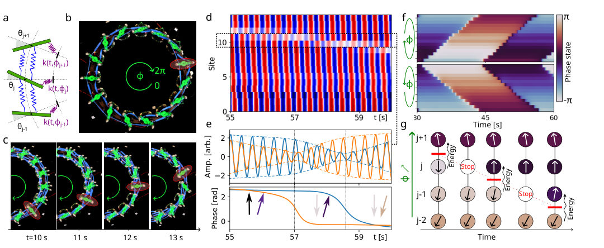
<figcaption class="paper-figure-caption"><b>Fig 2.</b> FIG. 2. Experimental observation. (a) Sketch of a piece of parametric chain. (b) Chain of coupled parametric oscillators displaying a phase dislocation. Green arrow shows winding of forcing phase. (c) Kinograms at different times showing dislocation propagation. (d) Angular position of oscillators along time showing the propagation of the phase dislocation. (e) A detail of such jump is shown, where both oscillator are initially in phase. The first one decreases its oscillation amplitude until (almost) cancellation at t = 57 s, and starts again with opposite phase. The two oscillators remain out of phase until the second one performs similar phase switch at t = 58.5 s. After the dislocation...</figcaption>
</figure>
<figure class="paper-figure-card">
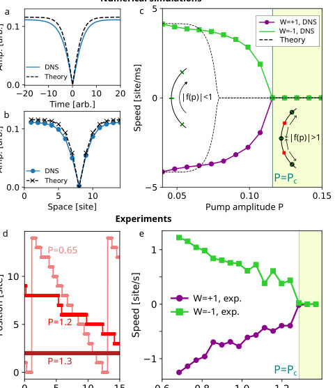
<figcaption class="paper-figure-caption"><b>Fig 3.</b> FIG. 3. Model and control of frustration velocity (a) Enve- lope as a function of time and (b) space from direct numeri- cal simulations (DNS) and soliton theory with no adjustable parameter (dashed line). (c) Velocity of the dislocation for W = ±1 as a function of forcing amplitude P from DNS (cir- cles/squares) and theory (dashed line). Dislocation freezes for P &gt; Pc. Inset: SNIC scenario on which attracting (black cir- cle) and repealing (red square) points appear for large enough forcing around each site. (d) Experimental tracking of the dislocation for forcing amplitude of P = 0.65, 1.2 and 1.3. Propagation goes from very regular to complete stopping. (e) Experimental result for...</figcaption>
</figure>
<figure class="paper-figure-card">
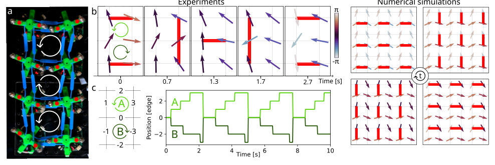
<figcaption class="paper-figure-caption"><b>Fig 4.</b> FIG. 4. Frustration in a two-dimensional network. (a) Tesselation of chains with opposite winding using X-shaped pendulums. (b) Phase state of the experimental lattice at different times. Red line materializes the dislocations, which are synchronized between adjacent cells. (c) Location of both dislocations along time. Regular visit of frustration on the shared edge triggers synchronization. (d) Numerical simulation on 6x6 network with fixed boundary condition, showing global synchronization of the network.</figcaption>
</figure>
<figure class="paper-figure-card">
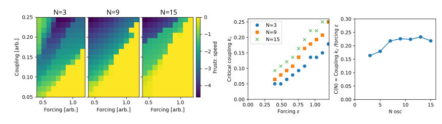
<figcaption class="paper-figure-caption"><b>Fig 5.</b> Figure 1: Numerical simulations of the nonlinear equation. (a) Velocity of the frustration for different values of forcing ϵ and coupling k. A clear transition between moving and nonmoving for k = kc(ϵ) is visible. (b) Critical coupling kc(ϵ) above which the frustration moves for different values of N. A linear fit allows to extract kc/ϵ = C(N) (c) Critical ratio C(N) as a function of N.</figcaption>
</figure>
</div>

<p><strong>Summary.</strong> This work explores dynamical frustration in engineered metamaterials by studying coupled, parametrically driven oscillators. The key finding is that frustration leads to stable, unidirectional phase defects (dislocations) that propagate due to non-reciprocal energy flow. The research validates this theory using both detailed mathematical modeling and comparison with physical experiments.</p>
<p><strong>Why it may be interesting.</strong> It bridges concepts from nonlinear dynamics (solitons, parametric resonance) with condensed matter concepts (frustration, metamaterials), providing a concrete, tunable platform for studying non-equilibrium quantum phenomena.</p>
<details>
<summary>Detailed structure</summary>
<p><strong>Main problem.</strong> The paper introduces and analyzes 'dynamical frustration,' a phenomenon where ground state degeneracy is replaced by a non-reciprocal, self-oscillating state in driven metamaterials.</p>
<p><strong>Main result.</strong> Dynamical frustration leads to the formation of topologically protected, unidirectionally propagating phase dislocations whose velocity is governed by the system's parametric pumping and spatial modulation.</p>
<p><strong>Method.</strong> The analysis combines theoretical derivations (e.g., multiple scale expansion, continuum limits) with numerical simulations and comparisons to experimental measurements.</p>
<p><strong>Model / system.</strong> The system is modeled using coupled parametric oscillators forming metamaterials, which can be realized in various platforms like cold atoms, superconducting circuits, or mechanical pendulums.</p>
<p><strong>Key observables.</strong> Topologically protected phase dislocations, non-reciprocal energy flux, and the dislocation velocity ($\dot{x}_0$).</p>
<p><strong>Important parameters / regimes.</strong> Parametric pumping amplitude ($\epsilon$ or $P$), spatial winding number ($W$), and coupling strength ($k$ or $\kappa$).</p>
<p><strong>Assumptions / limitations.</strong> The analysis relies on approximations such as the slowly varying envelope approximation and the continuum limit for deriving simplified governing equations.</p>
<p><strong>Figures summary.</strong> Figures illustrate the concept of frustration via phase states (e.g., on a Möbius strip), show the agreement between simulated and experimental dislocation velocity, and map out parametric resonance instability boundaries (Arnold tongues).</p>
<p><strong>Paper structure.</strong> The paper progresses from defining geometric vs. dynamical frustration, deriving the governing equations for coupled parametric oscillators, analyzing the resulting nonlinear wave dynamics (solitons), and finally validating the model against experimental measurements of resonance and defect motion.</p>
</details>
<details>
<summary>Abstract</summary>
<p>From spin ice and crumpled paper to cold atoms lattices and metamaterials, geometrical frustration occurs generically whenever local constraints cannot be satisfied all at once. The result is a ground state degeneracy, where many equivalent states, each of which contains unsatisfied constraints, coexist. Here, we introduce dynamical frustration, where the ground state degeneracy makes way to a non-reciprocal self-oscillating state instead. To create dynamical frustration, we construct metamaterials that are driven parametrically in time and modulated in space. The parametric pumping leads to period doubling and in turn to a discrete symmetry-breaking. This symmetry breaking, together with the spatial modulation enforces the existence of topologically protected phase dislocations, which propagate unidirectionally with a spontaneous phase that breaks a continuous symmetry. Tesselating 1d frustrated loops, one obtains a 2d metamaterial where phase dislocations self-organize into globally synchronized non-reciprocal phase defects. We expect dynamical frustration to be broadly applicable at any scale, from cold atoms and superconducting circuits to acoustics and RF circuits -- anywhere where space-time modulation can be pushed beyond linear stability.</p>
</details>
<p><sub><a href="#top">↑ back to top</a></sub></p>

<p><a id="paper-2606.01341"></a></p>
<h3 id="generating-fock-state-exceeding-10000-excitations-with-near-unit-fidelity-by-adaptive-generalized-parity-measurement"><a href="http://arxiv.org/abs/2606.01341v1">Generating Fock state exceeding 10000 excitations with near unit fidelity by adaptive generalized-parity measurement</a></h3>
<p><strong>Authors:</strong> Chen-yi Zhang, Jun Jing<br>
<strong>Type:</strong> theory · <strong>Category:</strong> other · <strong>PDF:</strong> <a href="https://arxiv.org/pdf/2606.01341v1">https://arxiv.org/pdf/2606.01341v1</a><br>
<strong>Analysis basis:</strong> full PDF text, analyzed in chunks
<strong>Topic relevance:</strong> 🔥 <code>measurement-induced transitions</code> <strong>4/5</strong> · 🔥 <code>quantum measurements</code> <strong>4/5</strong> · <code>Tavis-Cummings &amp; cavity-many-emitter</code> <strong>3/5</strong> · <code>analog quantum simulation</code> <strong>3/5</strong> · <code>correlated cavity matter</code> <strong>3/5</strong> · <code>methods for driven-dissipative</code> <strong>2/5</strong> · <code>correlated / nonlocal dissipation</code> <strong>1/5</strong> · <code>driven-dissipative phase transition</code> <strong>1/5</strong> · <code>entanglement &amp; information structure</code> <strong>1/5</strong> · <code>non-equilibrium dynamics</code> <strong>1/5</strong></p>
<div class="figure-strip-hint">↔ Scroll figures horizontally</div>
<div class="paper-figures-scroll">
<figure class="paper-figure-card">
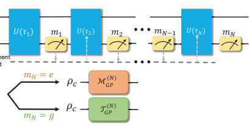
<figcaption class="paper-figure-caption"><b>Fig 1.</b> FIG. 1. Circuit diagram about constructing the adaptive gen- eralized parity measurement by repeatedly performing pro- jective measurements on the ancillary qubit with outcomes mk = e or g. The intervals τk between measurements depend on the last measurement record. After N rounds of mea- surements, the induced operation on the main system ρc is equivalent to a GPM M(N) GP [a displaced GPM T (N) GP ] if the final outcome is mN = e (mN = g).</figcaption>
</figure>
<figure class="paper-figure-card">
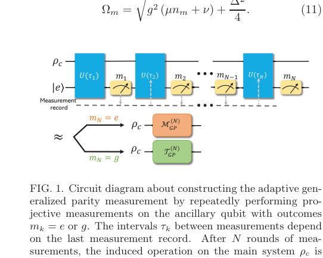
<figcaption class="paper-figure-caption"><b>Fig 2.</b> Figure 1 is the diagram of the our protocol, in which the duration of free evolution is adaptively updated ac- cording to the last measurement-outcome record. To ef- ficiently describe GPM on the main system, we set a GPM label nt(k) (an integer) to specify the center Fock state of the generalized-parity subspace after k rounds of measurement. k = 0 denotes the initial GPM label. The index of the final obtained Fock state is between nt(0) − p</figcaption>
</figure>
<figure class="paper-figure-card">
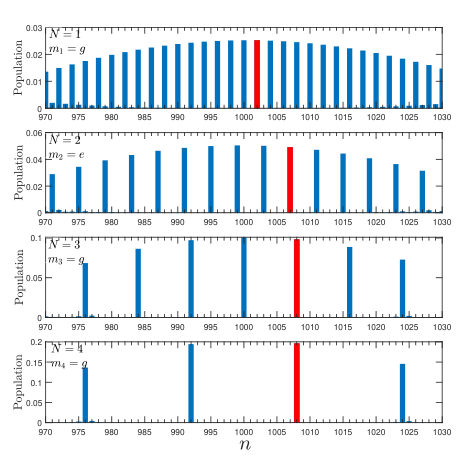
<figcaption class="paper-figure-caption"><b>Fig 3.</b> FIG. 2. An example about the variation of the population distribution in Fock space after the first 4 rounds for a spe- cific sequence of measurement results {|g⟩, |e⟩, |g⟩, |g⟩}. The initial GPM label is set as nt(0) = 1000. The red bar in each panel marks the updated GPM label nt(N) for measurements outcome mN = e or nt(N) + 1 for mN = g due to Eq. (16).</figcaption>
</figure>
<figure class="paper-figure-card">
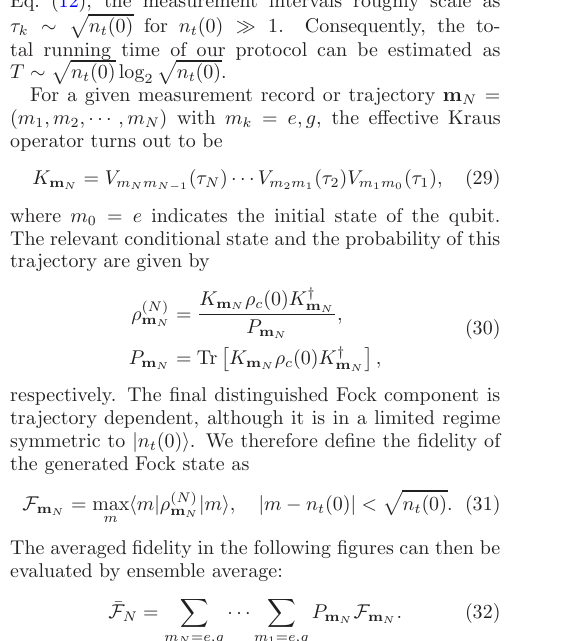
<figcaption class="paper-figure-caption"><b>Fig 4.</b> Figure 3 demonstrates the performance of our adaptive protocol for the large Fock-state generation under various initial coherent states |α⟩with |α|2 = nt(0). The numer- ical simulation is performed over 500 ≤nt(0) ≤20000. This range is mainly limited by our computer memory (we merely use a desktop with an Intel Core i7-7700 pro- cessor with 3.60 gigahertz in frequency and 16 gigabyte in memory) not by the protocol itself, which is irrelevant to the excitation number of Fock state. As shown in Fig. 3(a), the fidelity averaged over all measurement trajectories can rapidly converge to about 80% in less than 10 rounds of measurement, which is con- sistent with the logarithmic scaling behavior...</figcaption>
</figure>
<figure class="paper-figure-card">
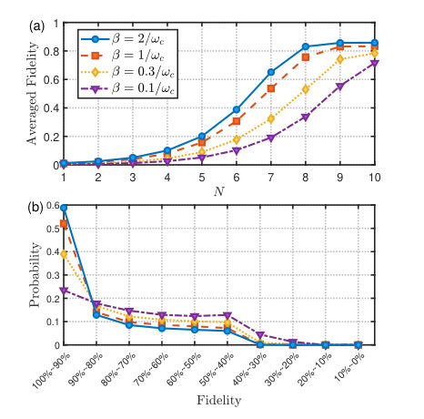
<figcaption class="paper-figure-caption"><b>Fig 5.</b> FIG. 4. Performance of our protocol when the resonator is prepared as a displaced thermal state D(α)ρthD†(α) under various initial inverse temperatures β. (a) Averaged fidelity as a function of the measurement round number N. (b) Prob- ability distribution of the final fidelity. α = p</figcaption>
</figure>
</div>

<p><strong>Summary.</strong> This paper details an adaptive generalized-parity-measurement protocol designed to create macroscopic Fock states exceeding 10,000 excitations in a bosonic system modeled by the JC Hamiltonian. By adaptively updating measurement intervals based on qubit outcomes, the protocol avoids the low success probabilities of traditional postselection methods. It demonstrates high-fidelity state generation, proving its utility for quantum information processing in cavity QED settings.</p>
<p><strong>Why it may be interesting.</strong> This work directly addresses state preparation in cavity QED systems, which is a cornerstone of modern AMO physics and quantum optics. The adaptive measurement scheme offers a powerful, non-postselection alternative to generating complex quantum states.</p>
<details>
<summary>Detailed structure</summary>
<p><strong>Main problem.</strong> The primary goal is to generate macroscopic Fock states containing over 10,000 excitations with high fidelity.</p>
<p><strong>Main result.</strong> The proposed adaptive generalized-parity-measurement protocol successfully achieves this state preparation in about 10 rounds, demonstrating high fidelity and robustness.</p>
<p><strong>Method.</strong> The protocol uses repeated, adaptively timed projective measurements on an ancillary qubit coupled to a bosonic mode, effectively implementing a generalized parity measurement.</p>
<p><strong>Model / system.</strong> The system is modeled using the resonant Jaynes-Cummings (JC) model, involving a bosonic mode (like a cavity field) coupled to an ancillary qubit. The initial state can be a coherent or displaced thermal state.</p>
<p><strong>Key observables.</strong> Fock state number ($n_t$), fidelity ($ar{F}_N$), and success probability for achieving high fidelity.</p>
<p><strong>Important parameters / regimes.</strong> Number of excitations ($n_t = \mathcal{O}(10^4)$), number of measurement rounds ($\sim 10$), and the initial state parameters (e.g., temperature $eta$).</p>
<p><strong>Assumptions / limitations.</strong> The protocol assumes the coupling allows for the derivation of a general rule for the adaptive GPM, and approximations are used in the resonant regime ($\Delta=0$).</p>
<p><strong>Figures summary.</strong> Figures illustrate the adaptive measurement circuit, the population distribution evolution in Fock space over several rounds, and the convergence of the averaged fidelity and the probability distribution of the final fidelity for both pure and thermal states.</p>
<p><strong>Paper structure.</strong> The paper introduces the problem, details the adaptive GPM protocol derived from the JC model, provides theoretical derivations for the measurement operators (Kraus operators), and concludes with numerical results demonstrating high-fidelity state preparation for large photon numbers.</p>
</details>
<details>
<summary>Abstract</summary>
<p>Macroscopic Fock states provide valuable resources for quantum information processing and quantum metrology. We here propose an adaptive generalized-parity-measurement protocol to create macroscopic Fock states with more than $10000$ excitations. For a general system with a discrete spectrum, e.g., a bosonic mode, that is coupled to an ancillary qubit, we derive a construction rule of either a diagonal generalized parity measurement (GPM) or a displaced GPM with intervals adaptive to the last outcome of repeated measurements on the qubit. Different from the probabilistic protocols based on postselection, in which only a single prescribed sequence of free-evolution-measurement is survived, our protocol retains every measurement trajectory by converting the outcome randomness of the ancillary-qubit measurement to the adaptive update of GPM. Using the resonant Jaynes-Cummings (JC) model, our protocol can transform a large coherent state to a large Fock state of photon numbers up to $n_t=\mathcal{O}(10^4)$ within $10$ rounds of measurements, where the averaged fidelity reaches about $80\%$. The probability for obtaining such a large Fock state with a fidelity above $99\%$ remains about $35\%$ with respect to the ensemble sampling. Our protocol also applies to displaced thermal states, indicating its robustness against a moderate thermal mixture.</p>
</details>
<p><sub><a href="#top">↑ back to top</a></sub></p>

<p><a id="paper-2606.02456"></a></p>
<h3 id="chaotic-spin-dynamics-of-elongated-spinor-condensates"><a href="http://arxiv.org/abs/2606.02456v1">Chaotic spin dynamics of elongated spinor condensates</a></h3>
<p><strong>Authors:</strong> Jose Reyes-Calderón, Albert Gallemí, Carsten Klempt, Luis Santos<br>
<strong>Type:</strong> theory · <strong>Category:</strong> quantum gases · <strong>PDF:</strong> <a href="https://arxiv.org/pdf/2606.02456v1">https://arxiv.org/pdf/2606.02456v1</a><br>
<strong>Analysis basis:</strong> full PDF text, analyzed in chunks
<strong>Topic relevance:</strong> 🔥 <code>non-equilibrium dynamics</code> <strong>4/5</strong> · <code>analog quantum simulation</code> <strong>3/5</strong> · <code>driven-dissipative phase transition</code> <strong>3/5</strong> · <code>exotic spin models in light-matter</code> <strong>3/5</strong> · <code>non-equilibrium universality</code> <strong>3/5</strong> · <code>methods for driven-dissipative</code> <strong>2/5</strong> · <code>Keldysh / 2PI / non-Gaussian methods</code> <strong>1/5</strong> · <code>entanglement &amp; information structure</code> <strong>1/5</strong></p>
<div class="figure-strip-hint">↔ Scroll figures horizontally</div>
<div class="paper-figures-scroll">
<figure class="paper-figure-card">
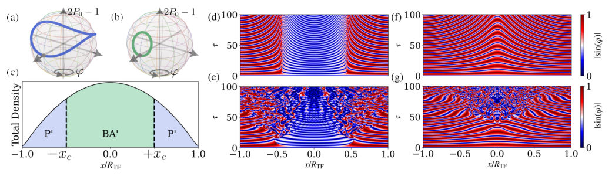
<figcaption class="paper-figure-caption"><b>Fig 1.</b> FIG. 1. Typical Bloch-sphere trajectories in the P′ phase (a) and the BA′ phase (b). (c) Sketch of of the Thomas-Fermi profile with spatial dynamical BA′ and P′ domains and an ESQPT at x = ±xc. Figures (d) and (e) show the spin dynamics in the LDR for η = 103.9 and ξ0 = 0.45 in the absence and the presence of quantum torque, respectively. Note the destabilization of the domain wall. Figures (f) and (g) show the same for η = 103.9 and ξ0 = 0.58. There are no domains in the LDR, but the different time scale of the local dynamics results eventually in a large quantum torque that destabilizes the LDR evolution.</figcaption>
</figure>
<figure class="paper-figure-card">
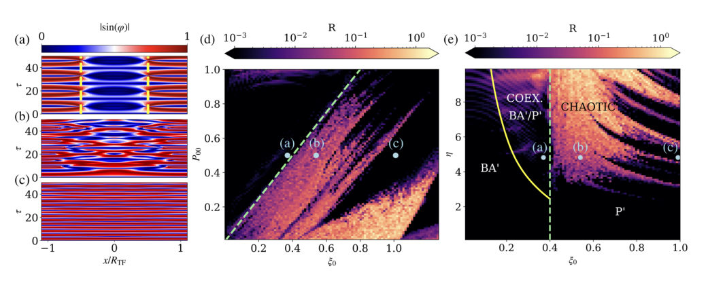
<figcaption class="paper-figure-caption"><b>Fig 2.</b> FIG. 2. Dynamics of | sin (φ(x, τ))| for P00 = 0.5, η = 4.82, and (a) ξ0 = 0.38 (a), ξ0 = 0.54 (b), and ξ0 = 1.01 (c). In Fig. (a) the yellow dashed lines indicate the ESQPT at x = ±xc. (d) Dynamical phase diagram as a function of ξ0 and P00, for η = 4.82. (e) Dynamical phase diagram as a function of ξ0 and η for P00 = 0.5. In plot (d) and (e), the color indicates the value of R (see text). Note the intricate structure of the chaotic regime. In plot (e), the solid yellow line marks the transition between the purely BA′ regime, and the coexistence regime. In both diagrams the dashed green lines indicate the transition between the regular coexistence regime and the irregular regime. We have...</figcaption>
</figure>
<figure class="paper-figure-card">
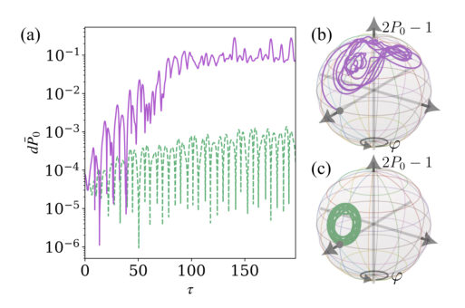
<figcaption class="paper-figure-caption"><b>Fig 3.</b> FIG. 3. (a) For η = 4.82 and P00 = 0.5, we depict the aver- age distance d ¯P0(τ) (see text) between the spatially-averaged population ¯P0(τ) for an unperturbed case and a perturbed one (initially d ¯P0(τ = 0) = 10−4). For ξ0 = 0.49 (irreg- ular regime), the purple continuous line shows an exponen- tial growth of the distance with time up to its maximum. In contrast, for ξ0 = 0.25 (regular coexistence regime), the distance (dashed green line) remains very small. The cor- responding Bloch-Sphere representations for the spatially- averaged spin are depicted in (b) and (c).</figcaption>
</figure>
</div>

<p><strong>Summary.</strong> This theoretical study investigates the complex, non-equilibrium dynamics of elongated spin-1 spinor BECs. The authors demonstrate that the interplay of quantum and nonlinear effects can lead to the coexistence of distinct dynamical domains separated by spatial quantum phase transitions. Furthermore, they map out a universal phase diagram revealing a chaotic regime, offering new diagnostic tools for experimental quantum gas research.</p>
<p><strong>Why it may be interesting.</strong> This work is highly relevant to AMO physics as it explores non-equilibrium dynamics and quantum chaos in ultracold atomic systems, providing experimental signatures (like domain walls and chaotic signatures) that can be probed in BEC experiments.</p>
<details>
<summary>Detailed structure</summary>
<p><strong>Main problem.</strong> The paper investigates the complex, non-trivial local magnetization dynamics in elongated spin-1 spinor Bose-Einstein condensates (BECs). It focuses on the interplay between nonlinear and quantum effects that can lead to chaotic dynamics and spatial excited-state quantum phase transitions (ESQPTs).</p>
<p><strong>Main result.</strong> The system can exhibit the coexistence of distinct dynamical domains separated by a robust ESQPT, and the local dynamics can enter a chaotic regime characterized by exponential sensitivity to initial conditions. This behavior is mapped onto a universal dynamical phase diagram.</p>
<p><strong>Method.</strong> The analysis involves solving coupled Gross-Pitaevskii equations (GPEs) in different regimes (SMA, LDR) and characterizing the dynamics using diagnostics like the power spectrum $P(\omega)$ and the divergence of perturbed trajectories.</p>
<p><strong>Model / system.</strong> The system is an elongated spin-1 BEC, described by an energy functional involving spin components and interactions. The dynamics are analyzed in regimes ranging from the Transversal-SMA approximation to the Local Density Regime (LDR).</p>
<p><strong>Key observables.</strong> Local magnetization dynamics, the existence and nature of ESQPTs, and the divergence of trajectories (used to quantify chaos).</p>
<p><strong>Important parameters / regimes.</strong> The degree of inhomogeneity ($\eta$), the spin-interaction parameters ($g, c$), and the initial quench parameters ($\xi_0, P_{00}$).</p>
<p><strong>Assumptions / limitations.</strong> The analysis assumes an elongated harmonic trap ($\omega_\perp \gg \omega$) and focuses on ferromagnetic BECs ($c < 0$). Approximations include the SMA and LDR limits.</p>
<p><strong>Figures summary.</strong> Figures illustrate Bloch-sphere trajectories in different phases (P' and BA'), sketch the Thomas-Fermi profile showing ESQPT domains, and map out dynamical phase diagrams using metrics like $R$ to distinguish regular from chaotic regimes.</p>
<p><strong>Paper structure.</strong> The paper develops the theory by first establishing the governing equations in various approximations (SMA, LDR), then analyzing the resulting dynamics, identifying the coexistence of distinct domains separated by ESQPTs, and finally mapping the universal phase diagram that distinguishes regular from chaotic evolution.</p>
</details>
<details>
<summary>Abstract</summary>
<p>Elongated spin-$1$ condensates present a highly non-trivial local magnetization dynamics, due to the interplay between nonlinear and quantum effects stemming from the inhomogeneous density profile. This interplay results in different dynamical regimes after an initial global quench. In particular, we show that the system may display the coexistence of markedly different dynamical domains separated by a robust interface that acts as a spatial excited-state quantum phase transition. Furthermore, the local spinor dynamics may enter a chaotic regime characterized by irregular evolution and exponential sensitivity to initial conditions. We map the universal phase diagram distinguishing regular and chaotic regimes, which may be probed in on-going experiments.</p>
</details>
<p><sub><a href="#top">↑ back to top</a></sub></p>

<p><a id="paper-2606.01588"></a></p>
<h3 id="higher-order-exceptional-points-and-enhanced-quantum-squeezing-in-a-pseudo-hermitian-semiconductor-optomechanical-system"><a href="http://arxiv.org/abs/2606.01588v1">Higher-order exceptional points and enhanced quantum squeezing in a pseudo-Hermitian semiconductor optomechanical system</a></h3>
<p><strong>Authors:</strong> Zi-Wei Jiang, Yan-Zi Jing, Zhen-Sen Lin, Rui Zhang, Wen-Quan Yang, Ya-Feng Jiao, Le-Man Kuang<br>
<strong>Type:</strong> theory · <strong>Category:</strong> other · <strong>PDF:</strong> <a href="https://arxiv.org/pdf/2606.01588v1">https://arxiv.org/pdf/2606.01588v1</a><br>
<strong>Analysis basis:</strong> full PDF text, analyzed in chunks
<strong>Topic relevance:</strong> 🔥 <code>driven-dissipative phase transition</code> <strong>4/5</strong> · <code>analog quantum simulation</code> <strong>3/5</strong> · <code>correlated cavity matter</code> <strong>2/5</strong> · <code>methods for driven-dissipative</code> <strong>2/5</strong> · <code>non-equilibrium dynamics</code> <strong>2/5</strong> · <code>non-equilibrium universality</code> <strong>2/5</strong> · <code>Keldysh / 2PI / non-Gaussian methods</code> <strong>1/5</strong> · <code>Tavis-Cummings &amp; cavity-many-emitter</code> <strong>1/5</strong> · <code>correlated / nonlocal dissipation</code> <strong>1/5</strong> · <code>entanglement &amp; information structure</code> <strong>1/5</strong></p>
<div class="figure-strip-hint">↔ Scroll figures horizontally</div>
<div class="paper-figures-scroll">
<figure class="paper-figure-card">
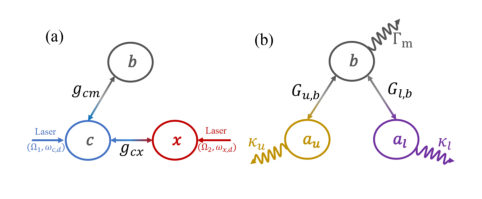
<figcaption class="paper-figure-caption"><b>Fig 1.</b> FIG. 1. Schematic of the semicondoctor exciton- optomechanical system. (a) The tripartite coupling config- uration among the cavity mode c, the exciton mode x, and the mechanical mode b. (b) The tripartite coupling configu- ration among the cavity mode c, polariton modes au and al after linearization in the strong-coupling regime.</figcaption>
</figure>
<figure class="paper-figure-card">
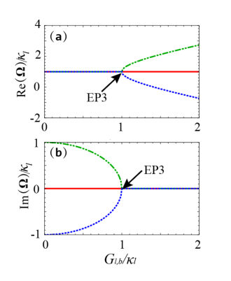
<figcaption class="paper-figure-caption"><b>Fig 2.</b> FIG. 2. Real and imaginary parts of the eigenvalues as func- tions of the dimensionless coupling strength Gl,b/κl. (a) and (b) show the real and imaginary parts of the eigenvalues, re- spectively. The solid (red) curve represents Ω0, the dash-dot (green) curve corresponds to Ω+, and the dot (blue) curve corresponds to Ω−. Here, λ = 2 and Ωm/κl = 1.</figcaption>
</figure>
<figure class="paper-figure-card">
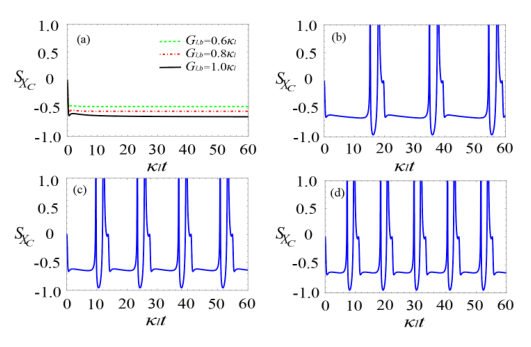
<figcaption class="paper-figure-caption"><b>Fig 3.</b> FIG. 3. Dynamic evolution of the quantum squeezing de- scribed by the squeezing parameter SXC versus the dimen- sionless time κlt for typical coupling strengths. (a) Cases of PT-symmetry broken phase (Gl,b/κl = 0.6, 0.8) and EP3 (Gl,b/κl = 1.0); (b)-(d) Cases of PT-symmetric phase for Gl,b/κl = 1.05, 1.10, and 1.15, respectively. Here we take λ = 2.</figcaption>
</figure>
<figure class="paper-figure-card">
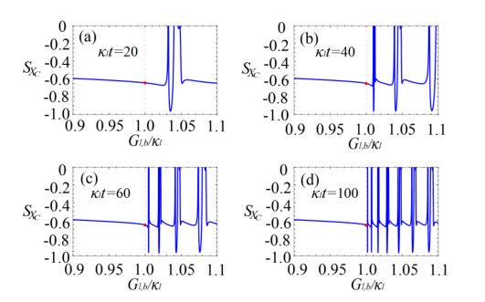
<figcaption class="paper-figure-caption"><b>Fig 4.</b> FIG. 4. The quantum squeezing described by the squeezing parameter SXC versus the dimensionless coupling strength Gl,b/κl at different dimensionless evolution times (a) κlt = 20; (b) κlt = 40; (c) κlt = 60; (d) κlt = 100. Here we take λ = 2. The red dot marks the EP3 at Gl,b/κl = 1.</figcaption>
</figure>
</div>

<p><strong>Summary.</strong> This paper theoretically explores how higher-order exceptional points (EP3) manifest in a pseudo-Hermitian semiconductor optomechanical system. It shows that the EP3 enhances two-mode quantum squeezing, and critically, the change in squeezing dynamics—from a frequency comb to a constant value—serves as a robust diagnostic tool to map out the system's quantum phase transitions.</p>
<p><strong>Why it may be interesting.</strong> This work directly bridges non-Hermitian physics (EPs) with quantum optics (squeezing) in a solid-state platform (optomechanics), providing a mechanism to actively probe quantum phase transitions using measurable quantum noise signatures.</p>
<details>
<summary>Detailed structure</summary>
<p><strong>Main problem.</strong> The study investigates the emergence of higher-order exceptional points (EP3) and their influence on quantum squeezing in a pseudo-Hermitian semiconductor optomechanical system.</p>
<p><strong>Main result.</strong> The research demonstrates that an EP3 exists due to tripartite coupling, leading to enhanced two-mode quantum squeezing. The squeezing dynamics exhibit distinct behaviors (frequency comb vs. constant) depending on whether the system is in the PT-symmetric or PT-broken phase.</p>
<p><strong>Method.</strong> The analysis involves deriving the effective Hamiltonian, linearizing quantum fluctuations, and calculating time-dependent squeezing parameters using quadrature operators.</p>
<p><strong>Model / system.</strong> The system is a semiconductor optomechanical setup coupling photons, excitons, and phonons, modeled using a pseudo-Hermitian Hamiltonian. The analysis proceeds by examining the eigenvalues and the resulting quantum noise properties.</p>
<p><strong>Key observables.</strong> Two-mode quantum squeezing parameters ($S_{XC}, S_{YC}$), the existence and location of Exceptional Points (EP3), and the time evolution of these parameters.</p>
<p><strong>Important parameters / regimes.</strong> Coupling strengths ($G_{l,b}/\kappa_l$), detunings ($\Delta_u, \Delta_l$), and the dimensionless time ($\kappa l t$).</p>
<p><strong>Assumptions / limitations.</strong> The analysis assumes the system operates in the strong-coupling regime and utilizes a linearization approach for quantum fluctuations.</p>
<p><strong>Figures summary.</strong> Figures illustrate the coalescence of eigenvalues at the EP3 as a function of coupling strength, and show the time evolution of squeezing, revealing a 'squeezing comb' in the PT-symmetric phase versus constant squeezing in the broken phase.</p>
<p><strong>Paper structure.</strong> The paper first establishes the model and Hamiltonian, then analyzes the conditions for pseudo-Hermiticity and the emergence of EPs. Subsequently, it quantifies quantum squeezing using quadrature operators, mapping out the distinct dynamical regimes around the EP3.</p>
</details>
<details>
<summary>Abstract</summary>
<p>We investigate higher-order exceptional points and quantum squeezing of exciton polaritons in a pseudo-Hermitian semiconductor optomechanical system. We show that a third-order exceptional point (EP3) can emerge from the tripartite coupling among photons, excitons, and phonons under pseudo-Hermitian conditions. A pronounced two-mode quantum squeezing of exciton polaritons is revealed, and we demonstrate that this squeezing is significantly enhanced in the vicinity of the EP3. Furthermore, we find that in the PT-symmetric phase, the squeezing dynamics produce a frequency comb of exciton polaritons, whereas the squeezing remains constant over time in the PT-symmetry broken phase and exactly at the EP3. The sudden change in quantum squeezing dynamics can be used to probe the phase transition and the EP3. Our work opens a pathway to manipulate quantum squeezing in semiconductor optomechanical platforms, offering potential advantages for quantum sensing and metrology.</p>
</details>
<p><sub><a href="#top">↑ back to top</a></sub></p>

<p><a id="paper-2606.00239"></a></p>
<h3 id="bath-induced-deviations-from-gibbs-statistics-for-strongly-interacting-oscillators"><a href="http://arxiv.org/abs/2606.00239v1">Bath-induced deviations from Gibbs statistics for strongly interacting oscillators</a></h3>
<p><strong>Authors:</strong> Felipe Recabal, Adrian E. Rubio Lopez, Johannes Schachenmayer, Felipe Herrera<br>
<strong>Type:</strong> theory · <strong>Category:</strong> statistical mechanics · <strong>PDF:</strong> <a href="https://arxiv.org/pdf/2606.00239v1">https://arxiv.org/pdf/2606.00239v1</a><br>
<strong>Analysis basis:</strong> full PDF text, analyzed in chunks
<strong>Topic relevance:</strong> 🔥 <code>non-equilibrium dynamics</code> <strong>4/5</strong> · <code>correlated / nonlocal dissipation</code> <strong>3/5</strong> · <code>driven-dissipative phase transition</code> <strong>3/5</strong> · <code>methods for driven-dissipative</code> <strong>3/5</strong> · <code>non-equilibrium universality</code> <strong>3/5</strong> · <code>Keldysh / 2PI / non-Gaussian methods</code> <strong>2/5</strong></p>
<div class="figure-strip-hint">↔ Scroll figures horizontally</div>
<div class="paper-figures-scroll">
<figure class="paper-figure-card">
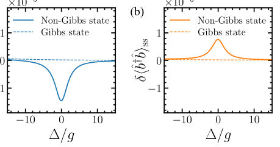
<figcaption class="paper-figure-caption"><b>Fig 1.</b> FIG. 1. Steady occupations of strongly interacting oscillators A and B as a function of the detuning ∆. Panels (a) and (b) correspond to values of δ⟨ˆa†ˆa⟩ss = ⟨ˆa†ˆa⟩ss −nth(ωa) and δ⟨ˆb†ˆb⟩ss = ⟨ˆb†ˆb⟩ss −nth(ωb), respectively. System parameters are {γa, γb, T, ωb, ωc} = {10−2, 2 × 10−2, 10, 102, 103}g.</figcaption>
</figure>
<figure class="paper-figure-card">
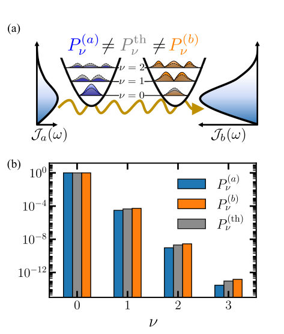
<figcaption class="paper-figure-caption"><b>Fig 2.</b> FIG. 2. (a) Scheme of unbalanced probability distributions of resonant strongly interacting oscillators under steady flux of excitations (yellow arrow) when damping rates are γa &lt; γb. (b) Excitation probability densities P (a) ν and P (b) ν over Fock states ν for resonant oscillators in the non-Gibbs states, compared to the thermal probability distribution P th ν .</figcaption>
</figure>
</div>

<p><strong>Summary.</strong> This theoretical study analyzes two strongly coupled quantum oscillators interacting with independent thermal baths. By extending the standard Redfield approach beyond the secular approximation, the authors demonstrate that the system can settle into a non-Gibbs steady state. This deviation is driven by a persistent excitation flux, particularly when the damping rates of the two oscillators are unequal.</p>
<p><strong>Why it may be interesting.</strong> This work is highly relevant to open quantum systems and quantum optics, as it provides a detailed theoretical framework for understanding how non-Markovian or non-secular bath effects can fundamentally alter the expected thermal equilibrium state in interacting quantum systems.</p>
<details>
<summary>Detailed structure</summary>
<p><strong>Main problem.</strong> The paper investigates how strong system-bath coupling can drive the steady state of interacting quantum oscillators away from the expected Gibbs thermal equilibrium state.</p>
<p><strong>Main result.</strong> When oscillators are unequally damped and strongly coupled, the steady state is a non-Gibbs state sustained by a non-zero steady excitation flux, which is most pronounced under resonant conditions.</p>
<p><strong>Method.</strong> The dynamics are analyzed using the Redfield quantum master equation, specifically employing a partial secular approximation to retain non-secular terms responsible for the non-Gibbs steady state.</p>
<p><strong>Model / system.</strong> The system consists of two strongly interacting quantum harmonic oscillators (A and B), each coupled to an independent thermal bath at equal temperature. The dynamics are governed by the total Hamiltonian and analyzed via the Redfield master equation.</p>
<p><strong>Key observables.</strong> Steady-state occupation numbers ($\langle \hat{a}^\dagger\hat{a} 
angle_{ss}, \langle \hat{b}^\dagger\hat{b} 
angle_{ss}$), steady-state coherence ($\langle \hat{a}\hat{b}^\dagger 
angle_{ss}$), and the steady excitation flux.</p>
<p><strong>Important parameters / regimes.</strong> Strong coupling ($g$), unequal damping rates ($\gamma_a 
eq \gamma_b$), and the detuning ($\Delta$) relative to the coupling strength.</p>
<p><strong>Assumptions / limitations.</strong> The analysis relies on the Born-Markov approximation and the partial secular approximation of the Redfield dynamics, assuming weak system-bath coupling.</p>
<p><strong>Figures summary.</strong> Figures illustrate the deviation of steady-state occupations from the thermal distribution, showing resonant enhancement of the non-Gibbs state, and comparing probability distributions to the thermal case.</p>
<p><strong>Paper structure.</strong> The paper first details the model Hamiltonian and the Redfield master equation, then analyzes the steady-state solutions by applying the partial secular approximation, culminating in the derivation of the non-Gibbs steady state characterized by energy flux.</p>
</details>
<details>
<summary>Abstract</summary>
<p>The Redfield quantum master equation is widely used to study the dynamics of interacting sub-systems that are weakly coupled to baths. Redfield dynamics under secular approximation preserves positivity of the reduced density operator and thermalizes the system into a Gibbs state at equilibrium. Long-time effects arising from non-secular terms are often neglected, but depending on the system spectrum and relative bath couplings, non-secular contributions are shown here to drive the system into a non-Gibbs state. For two strongly interacting quantum oscillators with independent baths at equal temperature, we analyze the microscopic origin of the deviations from Gibbs statistics. Provided that the oscillators are unequally damped by their baths, we show that steady state occupation numbers can significantly deviate from a Boltzmann distribution due to an excitation flux driven by bath-induced coherences between nearly-degenerate oscillator levels. Conditions for the recovery of thermal Gibbs statistics are discussed and experimental signatures suggested.</p>
</details>
<p><sub><a href="#top">↑ back to top</a></sub></p>

<p><a id="paper-2606.00766"></a></p>
<h3 id="energy-spectra-and-cascade-in-the-spin-turbulence-of-a-driven-spinor-bose-einstein-condensate"><a href="http://arxiv.org/abs/2606.00766v1">Energy spectra and cascade in the spin turbulence of a driven spinor Bose-Einstein condensate</a></h3>
<p><strong>Authors:</strong> Junghoon Lee, Jongmin Kim, Donggyu Lee, Yong-il Shin<br>
<strong>Type:</strong> experiment · <strong>Category:</strong> quantum gases · <strong>PDF:</strong> <a href="https://arxiv.org/pdf/2606.00766v1">https://arxiv.org/pdf/2606.00766v1</a><br>
<strong>Analysis basis:</strong> full PDF text, analyzed in chunks
<strong>Topic relevance:</strong> 🔥 <code>non-equilibrium universality</code> <strong>4/5</strong> · <code>analog quantum simulation</code> <strong>3/5</strong> · <code>driven-dissipative phase transition</code> <strong>3/5</strong> · <code>exotic spin models in light-matter</code> <strong>3/5</strong> · <code>non-equilibrium dynamics</code> <strong>3/5</strong> · <code>methods for driven-dissipative</code> <strong>1/5</strong> · <code>spintronics-quantum-optics interface</code> <strong>1/5</strong></p>
<div class="figure-strip-hint">↔ Scroll figures horizontally</div>
<div class="paper-figures-scroll">
<figure class="paper-figure-card">
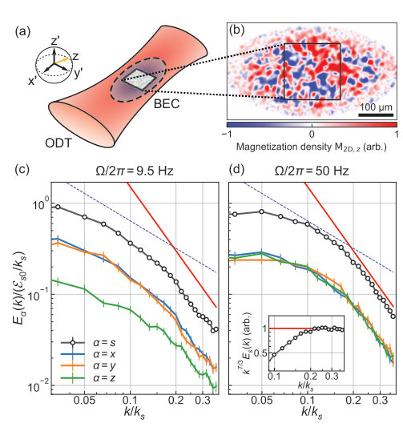
<figcaption class="paper-figure-caption"><b>Fig 1.</b> FIG. 1. Spin turbulence in a trapped spinor Bose-Einstein condensate (BEC). (a) Schematic of the experimental setup. A BEC of F = 1 23Na atoms was prepared in an optical dipole trap (ODT) under a uniform magnetic field along z and continuously driven by a transverse resonant RF mag- netic field with Rabi frequency Ω. (b) Representative image of the effective areal magnetization M2D,z in a steady turbulent BEC. The rectangular box indicates the region selected for de- termining the spin-interaction energy spectrum. (c,d) Energy spectra at two different driving strengths of (c) Ω/2π = 9.5 Hz and (d) 50 Hz. The colored lines show the directional energy spectra Ei(k) (i = x, y, z) and the black...</figcaption>
</figure>
<figure class="paper-figure-card">
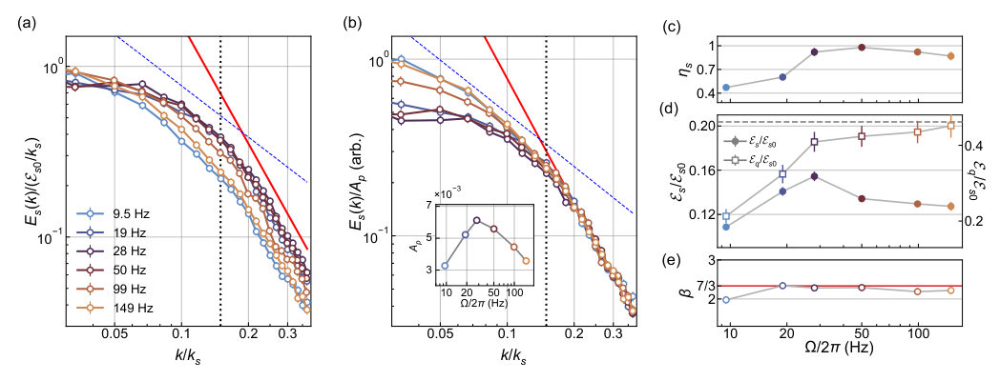
<figcaption class="paper-figure-caption"><b>Fig 2.</b> FIG. 2. Spin-interaction energy spectra in spin turbulence. (a) Energy spectra Es(k) at various driving strengths Ω. The vertical dotted line indicates ¯kℓ, the mean lower bound of the high-k scaling range across all Ωvalues [38]. (b) Rescaled energy spectra Es(k)/Ap. The prefactor Ap was extracted by fitting Es(k)/(Es0/ks) = Ap(k/ks)−7/3 to each spectrum in the range k ≥1.3 ¯kℓ. The inset shows Ap as a function of Ω(see Supplemental Material [38] for a model describing the energy injection rate). (c)–(e) Turbulence parameters as a function of Ω: (c) Energy anisotropy 2Ez/E⊥, where Ei = R Ei(k)dk and E⊥= Ex + Ey; (d) total spin-interaction energy Es = P</figcaption>
</figure>
<figure class="paper-figure-card">
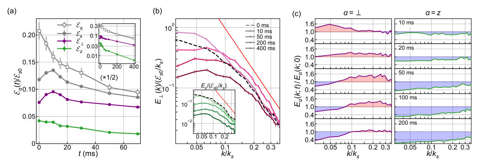
<figcaption class="paper-figure-caption"><b>Fig 3.</b> FIG. 3. Free decay of spin turbulence. (a) Time evolution of the quadratic Zeeman energy Eq (gray squares), total spin- interaction energy Es (gray circles), and its transeverse (E⊥= Ex + Ey, purple), and longitudinal (Ez, green) components. (b) Transverse spectra E⊥(k) = Ex(k)+Ey(k) for hold times t = 0, 10, 50, 200, 400-ms after switching off the drive. The inset shows the corresponding longitudinal spectra Ez(k). Red solid lines indicate the k−7/3 power law, and black dashed lines denote the spectra at t = 0. (c) Spectral ratio Eα(k, t)/Eα(k, 0) for the transverse (α =⊥, left) and longitudinal (α = z, right) components at different hold times. Red (blue) shading indicates spectral...</figcaption>
</figure>
</div>

<p><strong>Summary.</strong> This paper experimentally investigates spin turbulence in a driven spinor Bose-Einstein condensate. By measuring the spin-interaction energy spectrum, the authors confirm a universal power-law scaling of $k^{-7/3}$, characteristic of energy cascades. These results establish a quantitative tool for studying energy transport in spinor superfluids.</p>
<p><strong>Why it may be interesting.</strong> This work provides direct experimental evidence of universal energy cascade scaling laws (like $k^{-7/3}$) in a controllable quantum many-body system, offering a clean platform to test theoretical models of nonlinear wave turbulence.</p>
<details>
<summary>Detailed structure</summary>
<p><strong>Main problem.</strong> The study investigates the energy spectrum and cascade dynamics associated with spin turbulence in a driven spinor Bose-Einstein condensate.</p>
<p><strong>Main result.</strong> The experiment confirms a robust energy-spectral hallmark of spin turbulence, observing a power-law scaling exponent consistent with $k^{-7/3}$ across various drive strengths.</p>
<p><strong>Method.</strong> The research uses spin-selective imaging of a spinor BEC to reconstruct magnetization densities, followed by 2D Fourier analysis to extract the energy spectrum $E_s(\mathbf{k})$.</p>
<p><strong>Model / system.</strong> The physical system is a spin-1 Bose-Einstein condensate (BEC) of $^{23}	ext{Na}$ atoms, which is driven by a continuous resonant RF magnetic field ($\Omega$) to induce a non-equilibrium steady state of spin turbulence.</p>
<p><strong>Key observables.</strong> Spin-interaction energy spectrum $E_s(\mathbf{k})$, spectral anisotropy ($\eta_s$), and the power-law scaling exponent $eta$.</p>
<p><strong>Important parameters / regimes.</strong> Driving strength ($\Omega$), quadratic Zeeman shift ($q$), and the characteristic exponent $-7/3$.</p>
<p><strong>Assumptions / limitations.</strong> The analysis relies on correcting the measured power spectrum using the Modulation Transfer Function (MTF) and assumes negligible density redistribution during the short imaging delay.</p>
<p><strong>Figures summary.</strong> Figures illustrate the dependence of the energy spectrum $E_s(\mathbf{k})$ on driving strength $\Omega$, demonstrating the universal $k^{-7/3}$ scaling, and show the time evolution of energy components during free decay.</p>
<p><strong>Paper structure.</strong> The paper details the experimental setup and measurement techniques, analyzes the steady-state energy spectrum under continuous driving, examines the spectral anisotropy as a function of drive strength, and finally tracks the energy decay dynamics after switching off the drive to confirm the energy cascade.</p>
</details>
<details>
<summary>Abstract</summary>
<p>We investigate the spin-interaction energy spectrum of spin turbulence in a driven spinor Bose-Einstein condensate. Continuous spin driving of a spin-1 condensate produces a nonequilibrium steady state with spatially fluctuating magnetization. We observe a power-law scaling consistent with the $-7/3$ exponent predicted for spin-wave turbulence, which persists across our full range of drive strengths despite substantial changes in the spectral anisotropy. After switching off the drive, we track the free-decay evolution and find evidence consistent with a direct cascade of spin-interaction energy toward higher wavenumbers. These results establish an energy-spectral hallmark of spin turbulence and enable quantitative studies of cascade dynamics in spinor superfluids.</p>
</details>
<p><sub><a href="#top">↑ back to top</a></sub></p>

<p><a id="paper-2606.01712"></a></p>
<h3 id="negative-interaction-quench-dynamics-of-density-ordered-dipolar-bosons-in-a-one-dimensional-optical-lattice"><a href="http://arxiv.org/abs/2606.01712v1">Negative Interaction Quench Dynamics of Density-Ordered Dipolar Bosons in a One-Dimensional Optical Lattice</a></h3>
<p><strong>Authors:</strong> Rhombik Roy, N. D. Chavda, Barnali Chakrabarti, Arnaldo Gammal<br>
<strong>Type:</strong> theory · <strong>Category:</strong> quantum gases · <strong>PDF:</strong> <a href="https://arxiv.org/pdf/2606.01712v1">https://arxiv.org/pdf/2606.01712v1</a><br>
<strong>Analysis basis:</strong> full PDF text, analyzed in chunks
<strong>Topic relevance:</strong> 🔥 <code>non-equilibrium dynamics</code> <strong>4/5</strong> · <code>analog quantum simulation</code> <strong>3/5</strong> · <code>non-equilibrium universality</code> <strong>3/5</strong> · <code>Frenkel-Kontorova</code> <strong>2/5</strong> · <code>scars &amp; prethermalization</code> <strong>2/5</strong> · <code>entanglement &amp; information structure</code> <strong>1/5</strong> · <code>methods for driven-dissipative</code> <strong>1/5</strong></p>
<div class="figure-strip-hint">↔ Scroll figures horizontally</div>
<div class="paper-figures-scroll">
<figure class="paper-figure-card">

<figcaption class="paper-figure-caption"><b>Fig 1.</b> FIG. 1. One-body density ρ(x) (red curve) for N = 6 bosons in S = 3 lattice sites as a function of the dipolar interaction strength gd, with lattice depth fixed at V0 = 8. The calcu- lations are performed using M = 24 orbitals. (a) Superfluid (SF) phase (gd = 0): the density is delocalized, with a pro- nounced maximum in the central well due to the dominance of kinetic and lattice energies over interactions. (b) Mott- insulator (MI) phase (gd = 0.1): three equal density peaks across the wells indicate uniform distribution of two bosons per site and suppressed inter-well overlap. (c) Fermionized Mott (FMI) phase (gd = 1): the characteristic density dip within each well mimics...</figcaption>
</figure>
<figure class="paper-figure-card">

<figcaption class="paper-figure-caption"><b>Fig 2.</b> FIG. 2. Two-body density ρ(2)(x, x′) for six bosons in three lattice sites across the four emergent phases. For gd = 0, atoms cluster at the center with additional off-diagonal peaks due to superfluid delocalization. Increasing gd depletes the diagonal contribution ρ(2)(x, x), signaling enhanced correla- tions. At gd = 1.0, a correlation hole develops (fermionized Mott phase), while for gd = 15.0 a complete diagonal suppres- sion indicates crystallization driven by dominant long-range interactions.</figcaption>
</figure>
<figure class="paper-figure-card">

<figcaption class="paper-figure-caption"><b>Fig 3.</b> FIG. 3. Nonequilibrium dynamics of six dipolar bosons in a triple-well lattice following a negative interaction quench from gd = 15 (crystal state) to gd = 0 (superfluid). (a) Dy- namical fragmentation: time evolution of the natural occupa- tions ni/N illustrating the redistribution of particles among orbitals, (b) Lattice site-resolved position variance σ2(t), (c) Real-space density fluctuations δρ(x, t), (d) Momentum-space fluctuations δn(k, t). Computation is done with M = 24 or- bitals.</figcaption>
</figure>
<figure class="paper-figure-card">

<figcaption class="paper-figure-caption"><b>Fig 4.</b> FIG. 4. Nonequilibrium dynamics of six dipolar bosons in a triple-well lattice following a negative interaction quench from gd = 15 (crystal state) to gd = 0.1 (MI). (a) Dynamical frag- mentation: time evolution of the natural occupations ni/N illustrating the redistribution of particles among orbitals, (b) Lattice site-resolved position variance σ2(t), (c) Real-space density fluctuations δρ(x, t), (d) Momentum-space fluctua- tions δn(k, t). Computation is done with M = 24 orbitals.</figcaption>
</figure>
<figure class="paper-figure-card">

<figcaption class="paper-figure-caption"><b>Fig 5.</b> FIG. 5. Nonequilibrium dynamics of six dipolar bosons in a triple-well lattice following a negative interaction quench from gd = 15 (crystal state) to gd = 1.0 (fragmented MI). (a) Dynamical fragmentation: time evolution of the natural occu- pations ni/N illustrating the redistribution of particles among orbitals, (b) Lattice site-resolved position variance σ2(t), (c) Real-space density fluctuations δρ(x, t), (d) Momentum-space fluctuations δn(k, t). Computation is done with M = 24 or- bitals.</figcaption>
</figure>
</div>

<p><strong>Summary.</strong> This paper numerically explores how dipolar bosons in a 1D optical lattice behave after a sudden negative interaction quench. Using the MCTDHB method, the authors track various correlation and fluctuation observables across regimes spanning superfluid to Mott-insulating states. The key finding is the remarkable robustness of the initial crystal-state correlations despite the system undergoing significant dynamic changes.</p>
<p><strong>Why it may be interesting.</strong> This work provides detailed insights into non-equilibrium quantum dynamics in dipolar systems, which are highly relevant for simulating complex quantum phases and understanding correlation persistence after sudden changes in interaction parameters.</p>
<details>
<summary>Detailed structure</summary>
<p><strong>Main problem.</strong> The study investigates the non-equilibrium dynamics of a density-ordered dipolar Bose gas following a sudden negative interaction quench.</p>
<p><strong>Main result.</strong> The system exhibits a robust persistence of underlying crystal-state correlations despite strong dynamical responses, with dynamics characterized by distinct intrawell excitations and suppressed interwell tunneling.</p>
<p><strong>Method.</strong> The dynamics are simulated using the numerically exact multiconfigurational time-dependent Hartree method for bosons (MCTDHB/MCTDH-X).</p>
<p><strong>Model / system.</strong> The system consists of dipolar bosons confined in a finite one-dimensional optical lattice. The Hamiltonian includes both kinetic, lattice potential, and long-range dipolar interaction terms, which undergo a sign reversal quench.</p>
<p><strong>Key observables.</strong> Site-resolved position variance, real-space and momentum-space density fluctuations, one- and two-body Glauber correlation functions, and dynamical fragmentation.</p>
<p><strong>Important parameters / regimes.</strong> The quench protocol involves varying the dipolar interaction strength ($g_d$) from a strongly interacting crystal state ($g_d=15$) through superfluid ($g_d=0$), Mott-insulator ($g_d=0.1$), and fermionized Mott ($g_d=1$) regimes.</p>
<p><strong>Assumptions / limitations.</strong> Hard-wall boundary conditions are assumed, and the analysis relies on the MCTDH-X formulation, which is computationally intensive.</p>
<p><strong>Figures summary.</strong> Figures illustrate the time evolution of the four key observables (fragmentation, variance, $\delta
ho$, $\delta n$) across different quench protocols, demonstrating the transition from coherent to localized dynamics.</p>
<p><strong>Paper structure.</strong> The paper details the theoretical framework (Hamiltonian, quench protocol, MCTDH-X method), presents results analyzing the dynamics across various quench targets, and concludes by summarizing the findings regarding correlation robustness.</p>
</details>
<details>
<summary>Abstract</summary>
<p>We explore the nonequilibrium dynamics of a density-ordered dipolar Bose gas in a finite one-dimensional optical lattice following a negative interaction quench, using the numerically exact multiconfigurational time-dependent Hartree method for bosons. The interaction sign reversal, effectively driving a crossover from long-range to short-range interactions, generates rich intra- and interwell tunneling dynamics spanning superfluid, Mott-insulating, and fragmented regimes. A striking finding is the robustness of the underlying crystal-state correlations against the quench, despite the strong dynamical response. We identify emergent excitation modes, including local breathing and dipole-like oscillations, via real- and momentum-space observables, and quantify tunneling through site-resolved position variance. One- and two-body Glauber correlation functions further uncover a direct connection between tunneling and correlation dynamics. Moreover, we show that combining interaction quenches with lattice-depth ramping enables controllable dynamical engineering, establishing dipolar lattice systems as a promising platform for nonequilibrium quantum simulation.</p>
</details>
<p><sub><a href="#top">↑ back to top</a></sub></p>

<p><a id="paper-2606.00581"></a></p>
<h3 id="analog-photonic-simulator-for-large-scale-transport"><a href="http://arxiv.org/abs/2606.00581v1">Analog photonic simulator for large-scale transport</a></h3>
<p><strong>Authors:</strong> Mengyu Zhao, Xuezhi Zhu, Nikita Guseynov, Yewei Yuan, Na Wang, Meihong Wang, Yunyun Cao, Shi Jin, Nana Liu, Changde Xie, Kunchi Peng, Xiaolong Su<br>
<strong>Type:</strong> both · <strong>Category:</strong> quantum information and computing · <strong>PDF:</strong> <a href="https://arxiv.org/pdf/2606.00581v1">https://arxiv.org/pdf/2606.00581v1</a><br>
<strong>Analysis basis:</strong> full PDF text, analyzed in chunks
<strong>Topic relevance:</strong> 🔥 <code>analog quantum simulation</code> <strong>4/5</strong> · 🔥 <code>quantum optics experiment</code> <strong>4/5</strong> · <code>non-equilibrium dynamics</code> <strong>2/5</strong> · <code>quantum measurements</code> <strong>2/5</strong> · <code>QC/QI experiment</code> <strong>1/5</strong> · <code>entanglement &amp; information structure</code> <strong>1/5</strong> · <code>methods for driven-dissipative</code> <strong>1/5</strong></p>
<div class="figure-strip-hint">↔ Scroll figures horizontally</div>
<div class="paper-figures-scroll">
<figure class="paper-figure-card">

<figcaption class="paper-figure-caption"><b>Fig 1.</b> Figure 1: Conceptual diagram and experimental procedure for simulating the advection equation on a continuous-variable quantum platform. (A) The classical advection equation is mapped to an initial quantum state under displacement operations that act on the amplitude quadrature of the quantum states. Each dimension corresponds to an independent quantum mode (qumode). (B) Experimental workflow: the experiment begins with the preparation of the initial Gaussian quantum resources. Then controlled, variable displacement operations are applied to every quantum mode. The evolved quantum states are subsequently measured by homodyne detection. Finally, data acquisition and statistical analysis are...</figcaption>
</figure>
<figure class="paper-figure-card">

<figcaption class="paper-figure-caption"><b>Fig 2.</b> Figure 2: Experimental setup of the continuous variable photonic platform. (A) Main experimental setup. Two optical parametric oscillators (OPA A and OPA B) generate squeezed state sequences. The pump beam is modulated by cascaded acousto-optic modulators (AOMs), enabling dynamic control of the squeezing parameter. The generated squeezed states are injected into a reconfigurable optical network to generate the required quantum resources. Next, two amplitude-modulated (AM) ancillary beams are coupled with the signal beams to implement displacement operations. Finally, the output states are measured by two balanced homodyne detectors (BHDs). All modulators are driven by an arbitrary waveform...</figcaption>
</figure>
<figure class="paper-figure-card">

<figcaption class="paper-figure-caption"><b>Fig 3.</b> Figure 3: Measurements on time-bin-resolved single-mode and two-mode squeezed states. (A,B) Graphical representation of the single-mode (A) and two-mode (B) squeezed state sequences. (C,D) Noise power of the amplitude quadrature ˆx for the single-mode squeezed states (C) and ˆx1 + ˆx2 for the two-mode squeezed states (D) before and after displacement. All modes remain below the shot noise level. The red and blue scatter points represent the experimental data before and after displacement, respectively. Solid lines represent the corresponding moving averages. (E-I) Time-bin resolved sequences of modulated pump power, variance reflecting the single-mode squeezing parameter, variance...</figcaption>
</figure>
<figure class="paper-figure-card">

<figcaption class="paper-figure-caption"><b>Fig 4.</b> Figure 4: Results of the analog photonic simulation with CV cluster state. (A) Graphical representation of the CV cluster state. (B) The quadrature output after displacement crosses 10,000 temporal modes. The green and orange lines correspond to the amplitude quadrature of the two rails. (C) Amplitude quadrature values measured by BHD A and B over five consecutive temporal modes. (D) Amplitude quadrature combination evolution within one time bin. (E) ⟨(ˆxA k + ˆxB k + ˆxA k+1 −ˆxB k+1)2⟩before and after displacement. The green and orange scatter points represent the experimental data before and after displacement, respectively. Solid lines represent the corresponding moving averages. (F)...</figcaption>
</figure>
<figure class="paper-figure-card">

<figcaption class="paper-figure-caption"><b>Fig 5.</b> Figure 5: Experimental setup. The setup comprises three steps. First, OPA A and OPA B generate squeezed states, which are configured as single-mode squeezed state sequences, two-mode squeezed state sequences, or a time-domain continuous variable (CV) cluster state. Next, an arbitrary waveform generator (AWG) drives amplitude modulation of the ancillary beams, which is then coupled with the signal beam on a 99:1 beam-splitter. Finally, the output state is measured using balanced homodyne detection (BHD) with a local oscillator and recorded by an oscilloscope. PM, phase modulator; AOM, acousto-optic modulator; AM, amplitude modulator; FPC, fiber polarization controller.</figcaption>
</figure>
</div>

<p><strong>Summary.</strong> This work presents an analog photonic simulator for solving large-scale transport equations, specifically the advection equation. By encoding the PDE into the evolution of continuous-variable quantum modes, the authors bypass the exponential scaling issues of digital simulation. The results confirm that CV photonics is a powerful, programmable platform for simulating complex physical dynamics.</p>
<p><strong>Why it may be interesting.</strong> It provides a concrete, hardware-implementable blueprint for simulating complex, continuous-variable dynamics that are otherwise intractable for current digital quantum simulators.</p>
<details>
<summary>Detailed structure</summary>
<p><strong>Main problem.</strong> Simulating high-dimensional Partial Differential Equations (PDEs), like the advection equation, is computationally prohibitive for traditional digital quantum computers due to the curse of dimensionality.</p>
<p><strong>Main result.</strong> The authors demonstrate that continuous-variable (CV) quantum photonics provides a scalable, programmable analog platform capable of simulating large-scale transport dynamics with high fidelity.</p>
<p><strong>Method.</strong> The PDE evolution is mapped directly to programmable unitary operations (displacements) on a qumode state, which are then measured using homodyne detection to extract moment information.</p>
<p><strong>Model / system.</strong> The system uses a time-domain CV quantum optical platform, employing squeezed states and cluster states to encode the solution of the advection equation into optical modes.</p>
<p><strong>Key observables.</strong> First-order moments (mean collective coordinate) and second-order moments (mean carrier spatial spread) of the solution.</p>
<p><strong>Important parameters / regimes.</strong> Number of modes ($d$ up to 20,000), relative error ($\le 0.92\%$), and the advection coefficient ($\alpha_j$).</p>
<p><strong>Assumptions / limitations.</strong> The demonstration is limited to the constant-coefficient advection equation; simulating more general PDEs requires non-Gaussian operations.</p>
<p><strong>Figures summary.</strong> Figures illustrate the conceptual mapping from PDE to optical displacement, the experimental setup using squeezed states and cluster states, and the measurement process via homodyne detection.</p>
<p><strong>Paper structure.</strong> The paper establishes the problem (PDE simulation difficulty), proposes the CV photonic mapping, validates the simulation using large-scale squeezed and cluster states, and concludes by comparing resource scaling against digital qubit approaches.</p>
</details>
<details>
<summary>Abstract</summary>
<p>Transport equations describe how physical quantities -- such as mass, energy, momentum, concentration, probability, or fields -- are carried, propagated, or redistributed through space and time, forming a foundational class of partial differential equations across science and engineering. However, high-dimensional partial differential equations are difficult to represent on digital grids because the number of degrees of freedom grows exponentially with dimension. Continuous-variable quantum photonics on the other hand can represent and evolve these large-scale fields without first discretizing space into a discrete grid. We demonstrate a large-scale analog photonic simulator for the constant-coefficient advection equation, a transport equation that is a fundamental benchmark for scientific computing. The solution of a $d$-variable advection equation is encoded into $d$ optical modes, so that the partial differential equation evolution maps directly to programmable phase-space displacements generated by optical quadrature momenta. Using a time-domain continuous-variable quantum photonic platform, we validate programmable control with $20,000$ single-mode squeezed states and $20,000$ two-mode squeezed states, and implement transport dynamics on a $20,000$-mode cluster-state resource. Homodyne measurements then verifies mode-resolved displacement control, which can provide first and second-order moment information of the solution to the advection equation, with final achievable relative error as low as $0.8\%$ and $0.92\%$ for first and second-order moment observables respectively. Our results establish continuous-variable photonics as a suitable programmable analog platform for large-scale advection equations.</p>
</details>
<p><sub><a href="#top">↑ back to top</a></sub></p>

<p><a id="paper-2606.02391"></a></p>
<h3 id="boulder-lectures-on-thermal-dynamics-and-hydrodynamic-efts"><a href="http://arxiv.org/abs/2606.02391v1">Boulder Lectures on Thermal Dynamics and Hydrodynamic EFTs</a></h3>
<p><strong>Authors:</strong> Luca V. Delacretaz<br>
<strong>Type:</strong> theory · <strong>Category:</strong> statistical mechanics · <strong>PDF:</strong> <a href="https://arxiv.org/pdf/2606.02391v1">https://arxiv.org/pdf/2606.02391v1</a><br>
<strong>Analysis basis:</strong> full PDF text, analyzed in chunks
<strong>Topic relevance:</strong> 🔥 <code>Keldysh / 2PI / non-Gaussian methods</code> <strong>4/5</strong> · 🔥 <code>non-equilibrium dynamics</code> <strong>4/5</strong> · <code>non-equilibrium universality</code> <strong>3/5</strong> · <code>methods for driven-dissipative</code> <strong>2/5</strong> · <code>analog quantum simulation</code> <strong>1/5</strong> · <code>driven-dissipative phase transition</code> <strong>1/5</strong></p>
<div class="figure-strip-hint">↔ Scroll figures horizontally</div>
<div class="paper-figures-scroll">
<figure class="paper-figure-card">

<figcaption class="paper-figure-caption"><b>Fig 1.</b> Figure 1: (a) Global equilibrium is reached after a time scale that grows with volume in</figcaption>
</figure>
<figure class="paper-figure-card">

<figcaption class="paper-figure-caption"><b>Fig 2.</b> Figure 2: Schwinger-Keldysh contour with sources. Time increases from left to right.</figcaption>
</figure>
<figure class="paper-figure-card">

<figcaption class="paper-figure-caption"><b>Fig 3.</b> Figure 3: (a) On-shell condition for the two internal legs, leading to a branch point at</figcaption>
</figure>
<figure class="paper-figure-card">

<figcaption class="paper-figure-caption"><b>Fig 4.</b> Figure 4: Density two-point function ⟨n(t, x)n⟩in a classical lattice gas from early times</figcaption>
</figure>
<figure class="paper-figure-card">

<figcaption class="paper-figure-caption"><b>Fig 5.</b> Figure 6: (a) Hydrodynamics cannot emerge too soon or it would violate microcausality</figcaption>
</figure>
</div>

<p><strong>Summary.</strong> This lecture series details the modern construction of Effective Field Theories (EFTs) to describe the thermal dynamics of quantum many-body systems. It shows that hydrodynamics governs late-time behavior and develops rigorous constraints on transport parameters by combining principles of causality, unitarity, and symmetry breaking. This work provides a systematic framework for analyzing thermalization across diverse physical models.</p>
<p><strong>Why it may be interesting.</strong> The rigorous derivation of hydrodynamic behavior and the establishment of universal bounds on transport coefficients (like the Planckian bound) provide powerful theoretical tools applicable to understanding thermalization in complex quantum systems.</p>
<details>
<summary>Detailed structure</summary>
<p><strong>Main problem.</strong> The paper addresses the fundamental challenge of developing nonperturbative tools to study the out-of-equilibrium dynamics of generic quantum many-body systems at finite temperature.</p>
<p><strong>Main result.</strong> It establishes that fluctuating hydrodynamics emerges universally in local many-body systems at $T>0$, and it derives universal constraints on transport parameters using causality and unitarity bounds.</p>
<p><strong>Method.</strong> The primary methods involve constructing and constraining the thermal effective action ($W$) via derivative expansions, utilizing the Schwinger-Keldysh formalism, and applying analytic continuation techniques to Green's functions.</p>
<p><strong>Model / system.</strong> The analysis applies to a wide range of local many-body systems, including spin chains, metals, insulators, and relativistic Quantum Field Theories (QFTs), covering both equilibrium and non-equilibrium regimes.</p>
<p><strong>Key observables.</strong> Dynamical correlation functions, conductivity $\sigma_{ij}(\omega)$, the thermal effective action $W$, and the energy density $\epsilon$ and pressure $P$.</p>
<p><strong>Important parameters / regimes.</strong> Finite thermal correlation length ($\xi < \infty$), temperature ($T$), chemical potential ($\mu$), and transport parameters like diffusivity ($D$) and sound speed ($c_s$).</p>
<p><strong>Assumptions / limitations.</strong> The EFT approach assumes a finite thermal correlation length ($\xi < \infty$), and derivations often rely on causality and unitarity constraints derived from analytic properties of correlation functions.</p>
<p><strong>Figures summary.</strong> Figures illustrate the difference between global and local equilibrium time scales, the Schwinger-Keldysh contour with sources, and the conflict between diffusive spreading and subluminal propagation.</p>
<p><strong>Paper structure.</strong> The structure moves from introducing the necessity of EFTs for out-of-equilibrium dynamics, to deriving the thermal effective action $W$ from equilibrium principles, and finally to constraining the parameters within $W$ using causality and unitarity bounds.</p>
</details>
<details>
<summary>Abstract</summary>
<p>Fluctuating hydrodynamics emerges in essentially any local many-body system at nonzero temperature. Effective field theory (EFT) approaches enable the quantitative study of this emergence, providing a controlled framework to capture late-time observables. These lectures introduce the organizing principles behind equilibrium and out-of-equilibrium dynamics in these thermalizing systems. A central focus is the modern construction of these EFTs, which frames fluctuating hydrodynamics through the lens of "strong-to-weak" spontaneous symmetry breaking. Drawing examples from both high-energy and condensed matter physics, we show how this paradigm adapts to systems ranging from spin chains to relativistic quantum field theories, including models with generalized symmetries or symmetries with 't Hooft anomalies. Finally, we discuss UV/IR constraints on transport parameters -- viewed as the Wilson coefficients of hydrodynamic EFTs -- both in continuum and on the lattice.</p>
</details>
<p><sub><a href="#top">↑ back to top</a></sub></p>

<p><a id="paper-2606.01728"></a></p>
<h3 id="microscopic-origin-of-emergent-elliptic-flow-and-molecule-formation-in-strongly-interacting-quasi-two-dimensional-few-body-systems"><a href="http://arxiv.org/abs/2606.01728v1">Microscopic Origin of Emergent Elliptic Flow and Molecule Formation in Strongly Interacting Quasi-Two-Dimensional Few-Body Systems</a></h3>
<p><strong>Authors:</strong> Xin-Yuan Gao, Kai Yuen Lee, Qingze Guan, Yangqian Yan<br>
<strong>Type:</strong> theory · <strong>Category:</strong> quantum gases · <strong>PDF:</strong> <a href="https://arxiv.org/pdf/2606.01728v1">https://arxiv.org/pdf/2606.01728v1</a><br>
<strong>Analysis basis:</strong> full PDF text, analyzed in chunks
<strong>Topic relevance:</strong> 🔥 <code>analog quantum simulation</code> <strong>4/5</strong> · <code>Keldysh / 2PI / non-Gaussian methods</code> <strong>3/5</strong> · <code>methods for driven-dissipative</code> <strong>3/5</strong> · <code>non-equilibrium dynamics</code> <strong>3/5</strong> · <code>entanglement &amp; information structure</code> <strong>1/5</strong> · <code>non-equilibrium universality</code> <strong>1/5</strong></p>
<div class="figure-strip-hint">↔ Scroll figures horizontally</div>
<div class="paper-figures-scroll">
<figure class="paper-figure-card">

<figcaption class="paper-figure-caption"><b>Fig 1.</b> FIG. 1. Few-fermion 2D expansion: density snapshots, TDECG convergence, and emergence of elliptic flow. (a)- (e) One-body densities for N = 3+3 at ωt = 0, 5, 30 in real space and ωt = 0, 5 in momentum space, with representative single- shot particle positions overlaid; black/white markers indicate sampled spin-up/spin-down particles. Dashed circles in (d),(e) mark the non-interacting Fermi momentum ℏkF ≃2.17 ℏ/aho of the 3 + 3 ground state in the anisotropic trap, corresponding to a Fermi energy EF = ℏ(5ωx + ωy)/2. (f) Momentum-space widths δpx/y(t) after trap release, showing interaction-induced anisotropy, for basis sizes Nb = 40 (dark, thick dots), 44 (normal, dashed lines), and 48...</figcaption>
</figure>
<figure class="paper-figure-card">

<figcaption class="paper-figure-caption"><b>Fig 2.</b> Figure 2 reveals a striking particle-number dependence in the relative momentum correlator C(2) R . At ωt = 0, all three systems exhibit a pair of positive back- to-back lobes near |pR| ≈ 2ℏkF [arrows in panels (a),(e),(i)], characteristic of Cooper-pair correlations in which opposite-spin fermions occupy nearly opposite momenta close to the Fermi surface [41, 42]. By ωt = 1, these lobes have migrated inward toward pR = 0 [arrows in (b),(f),(j)], signaling the onset of molecule formation; the 3+3 system already develops a pronounced positive central feature, whereas the 1+1 and 2+2 systems still show a near-zero central value, indicating a slower crossover to the molecular regime. At long...</figcaption>
</figure>
<figure class="paper-figure-card">

<figcaption class="paper-figure-caption"><b>Fig 3.</b> FIG. 2. Dynamical BCS-BEC crossover visualized through relative momentum correlations. Evolution of the relative momentum correlator C(2) R (pR) for the 1+1, 2+2, and 3+3 systems in the anisotropic trap, shown in the top, middle, and bottom rows, respectively. Red (green) regions correspond to enhanced (depleted) opposite-spin coincidence at relative momentum pR. From left to right, the four columns correspond to ωt = 0, 1, 5, 30. The dashed circles mark the eye-guide radius |pR| = 2ℏkF , and the black arrows in panels (a),(b),(e),(f),(i),(j) indicate the inward migration of the back-to-back positive lobes toward pR = 0.</figcaption>
</figure>
<figure class="paper-figure-card">

<figcaption class="paper-figure-caption"><b>Fig 4.</b> FIG. 3. Quantitative evidence for molecular formation. (a) Aspect ratio δrx/δry: blue line (red circles) shows the full ECG many-body calculation (Monte Carlo sampling that treats the system as three distinguishable molecules). (b) Radial probability density of the pair-relative coordinate: orange circles show Monte Carlo sampling at ωt = 30; blue line shows the s-wave bound-state probability density |ψ0(r)|2 of the two-body Schr¨odinger equation with potential V (r), Eq. (4).</figcaption>
</figure>
<figure class="paper-figure-card">

<figcaption class="paper-figure-caption"><b>Fig 5.</b> FIG. 1. Tunability of the 2D scattering length a2D and the effective-range parameter re for the double-Gaussian potential. (a) Potential shape for a single Gaussian (U1 = 0, blue dashed) and the double Gaussian with a potential barrier (U1 = 25.8ℏω, red solid), both with U0 = 104ℏω and σ = 0.1aho. (b) Effective-range parameter re for a single-Gaussian potential (U1 = 0) as a function of U0, where re remains strictly positive regardless of the value of U0. (c) Effective-range parameter re (left axis, red solid) and ln(a2D/aho) (right axis, blue dashed) for the double Gaussian as a function of U1 with fixed U0 = 104ℏω. As U1 increases, re decreases and becomes negative for U1 ≳15ℏω. The red...</figcaption>
</figure>
</div>

<p><strong>Summary.</strong> This work develops and applies the Time-Dependent Explicitly Correlated Gaussian (TDECG) method to simulate strongly interacting few-fermion systems in 2D. It successfully reproduces key experimental signatures, including interaction-driven elliptic flow and the BCS-BEC crossover, by tracking the formation of molecular pairs. The development also rigorously compares variational principles, establishing the Lagrangian approach as the most numerically stable tool for these complex dynamics.</p>
<p><strong>Why it may be interesting.</strong> The combination of advanced numerical techniques (TDECG) with the study of fundamental quantum phenomena like BCS-BEC crossover and hydrodynamic flow in ultracold atomic systems makes this highly relevant to AMO physics and quantum gases.</p>
<details>
<summary>Detailed structure</summary>
<p><strong>Main problem.</strong> The paper addresses the microscopic origin of emergent hydrodynamic behavior, specifically elliptic flow and molecule formation, in strongly interacting quasi-two-dimensional few-fermion systems.</p>
<p><strong>Main result.</strong> The TDECG method successfully reproduces the experimentally observed elliptic flow and demonstrates a dynamical BCS-BEC crossover, providing a microscopic picture of chemical freeze-out.</p>
<p><strong>Method.</strong> The study employs the Time-Dependent Explicitly Correlated Gaussian (TDECG) method, utilizing a Lagrangian variational principle for stable, real-time evolution of the many-body wavefunction.</p>
<p><strong>Model / system.</strong> The system consists of spin-balanced N fermions in an anisotropic 2D harmonic trap, interacting via a short-range potential. The analysis covers few-body configurations up to N=6, examining the transition from a gas to molecular pairs.</p>
<p><strong>Key observables.</strong> Elliptic flow ($\delta r_x/\delta r_y$), BCS-BEC crossover signatures (momentum distribution $C^{(2)}_R(p_R)$), and the pair-relative probability density.</p>
<p><strong>Important parameters / regimes.</strong> The scattering length ($a_{2D}$) and effective range ($r_e$) are tuned using a double-Gaussian pseudopotential to match experimental parameters.</p>
<p><strong>Assumptions / limitations.</strong> The primary assumption is the applicability and convergence of the TDECG method, which is shown to be numerically superior to the McLachlan formulation for long-time dynamics.</p>
<p><strong>Figures summary.</strong> Figures illustrate density snapshots showing flow evolution, momentum distributions confirming pairing, and quantitative comparisons of the aspect ratio and pair-relative density against theoretical bounds.</p>
<p><strong>Paper structure.</strong> The paper details the general variational framework, the model Hamiltonian, the ECG ansatz, and the numerical implementation, emphasizing the derivation and comparison between the Lagrangian and McLachlan variational principles for stable time evolution.</p>
</details>
<details>
<summary>Abstract</summary>
<p>Recent experiments simulating two-dimensional few-fermion systems have observed emergent hydrodynamic behavior, i.e., interaction-driven elliptic flow by adding fermions two at a time [S.~Brandstetter et al., Nat. Phys. (2025)]. Due to the curse of dimensionality and strong correlations, capturing such phenomena beyond two particles remains challenging. Here, we use the ab initio time-dependent explicitly correlated Gaussian (TDECG) method to quantitatively reproduce these experimental observations. With only a moderate number of correlated Gaussian basis functions, our approach obtains converged dynamical observables for systems up to six particles. Furthermore, real-time access to the many-body wavefunction and two-point correlation functions enables us to visualize the transformation from a strongly interacting gas to a stream of paired molecules, i.e., a dynamical BCS-BEC crossover.</p>
</details>
<p><sub><a href="#top">↑ back to top</a></sub></p>

<p><a id="paper-2606.01568"></a></p>
<h3 id="tandem-exclusion-process"><a href="http://arxiv.org/abs/2606.01568v1">Tandem Exclusion Process</a></h3>
<p><strong>Authors:</strong> Ngo Phuoc Nguyen Ngoc, Lam Thi Nhung, Huynh Anh Thi<br>
<strong>Type:</strong> theory · <strong>Category:</strong> statistical mechanics · <strong>PDF:</strong> <a href="https://arxiv.org/pdf/2606.01568v1">https://arxiv.org/pdf/2606.01568v1</a><br>
<strong>Analysis basis:</strong> full PDF text, analyzed in chunks
<strong>Topic relevance:</strong> 🔥 <code>non-equilibrium dynamics</code> <strong>4/5</strong> · <code>driven-dissipative phase transition</code> <strong>3/5</strong> · <code>methods for driven-dissipative</code> <strong>3/5</strong> · <code>non-equilibrium universality</code> <strong>3/5</strong> · <code>Frenkel-Kontorova</code> <strong>1/5</strong> · <code>Keldysh / 2PI / non-Gaussian methods</code> <strong>1/5</strong></p>
<div class="figure-strip-hint">↔ Scroll figures horizontally</div>
<div class="paper-figures-scroll">
<figure class="paper-figure-card">

<figcaption class="paper-figure-caption"><b>Fig 1.</b> FIG. 1. Stationary current J(ρ; α, β) for q ∈{0.5, 1, 2} with α = 1. Solid curves: exact formula (10). Filled circles: Monte Carlo simulations (N = 60, 5 × 105 updates).</figcaption>
</figure>
<figure class="paper-figure-card">

<figcaption class="paper-figure-caption"><b>Fig 2.</b> Figure 1 compares formula (10) with Monte Carlo sim- ulations over the full density range, showing excellent agreement at every value of q, and Figure 2 displays the corresponding phase diagram in the (ρ, q)-plane. The current exhibits three structural features, all originating from the cooperative nature of the dynamics.</figcaption>
</figure>
<figure class="paper-figure-card">

<figcaption class="paper-figure-caption"><b>Fig 3.</b> FIG. 2. Phase diagram of the stationary current J(ρ, q) with α = 1. Colors encode the current magnitude from low (dark) to high (bright); the dashed line q = 1 marks the Bernoulli locus.</figcaption>
</figure>
<figure class="paper-figure-card">

<figcaption class="paper-figure-caption"><b>Fig 4.</b> FIG. 3. Spacetime diagrams (N = 80, ρ = 0.5, α = 1). Left: dispersed regime (q = 0.05). Center: Bernoulli regime (q = 1). Right: clustered regime (q = 20), where coherent moving tandem groups appear as broad diagonal bands.</figcaption>
</figure>
<figure class="paper-figure-card">

<figcaption class="paper-figure-caption"><b>Fig 5.</b> FIG. 4. Pair correlation ratio g = Eπ[η0η1]/ρ2 as a function of q = β/α for several densities. Solid curves: exact formula (16). Filled circles: Monte Carlo simulations (N = 50, 8000 samples). The crossover between clustered (g &gt; 1) and dispersed (g &lt; 1) regimes occurs at q = 1.</figcaption>
</figure>
</div>

<p><strong>Summary.</strong> This paper analyzes the Tandem Exclusion Process (TEP), a lattice model simulating cooperative particle movement. It proves the system reaches a Gibbs stationary state and derives exact formulas for the particle current and spatial correlations. The findings show that tandem coordination can significantly enhance collective transport efficiency, especially at high densities.</p>
<p><strong>Why it may be interesting.</strong> The study provides a concrete example of how local, cooperative rules can lead to collective, non-trivial macroscopic transport properties, which is relevant for understanding driven many-body systems.</p>
<details>
<summary>Detailed structure</summary>
<p><strong>Main problem.</strong> The paper investigates how local, cooperative interactions generate macroscopic transport phenomena in a non-equilibrium lattice gas model.</p>
<p><strong>Main result.</strong> The stationary measure is a Gibbs state, and the resulting particle current is asymmetric, showing enhanced transport efficiency at high densities compared to simpler models like TASEP.</p>
<p><strong>Method.</strong> The analysis employs transfer-matrix methods and the derivation of the stationary measure via the global balance identity.</p>
<p><strong>Model / system.</strong> The Tandem Exclusion Process (TEP) is a 1D stochastic lattice model simulating particle movement based on two cooperative local transitions (leader advancement and follower recovery).</p>
<p><strong>Key observables.</strong> Stationary particle current (J), nearest-neighbor pair correlation ratio (g), and asymptotic correlation length (xi).</p>
<p><strong>Important parameters / regimes.</strong> The ratio q = beta/alpha, particle density (rho), and the comparison to the TASEP model.</p>
<p><strong>Assumptions / limitations.</strong> The analysis is restricted to the dynamically active sector of the lattice configurations, as certain patterns lead to absorbing states.</p>
<p><strong>Figures summary.</strong> Figures illustrate the dependence of the current on density and the pair correlation ratio g on the parameter q, showing crossovers between clustered and unclustered regimes.</p>
<p><strong>Paper structure.</strong> The paper establishes the Gibbs stationary measure, derives closed-form expressions for the current and correlations using transfer-matrix methods, and analyzes the behavior in various parameter regimes (e.g., q-&gt;infinity).</p>
</details>
<details>
<summary>Abstract</summary>
<p>We introduce the \emph{tandem exclusion process} (TEP), a one-dimensional stochastic lattice model motivated by tandem running in ants. Particles evolve through two cooperative local transitions, $110\to101$ at rate $α$ (leader advancement) and $101\to011$ at rate $β$ (follower recovery). We prove that the stationary measure on the dynamically active sector is the Gibbs measure $π\propto q^{H(η)}$, where $q=β/α$ and $H(η)$ counts neighboring occupied pairs, and derive exact closed-form expressions for the stationary current and spatial correlations using transfer-matrix methods. The current is asymmetric under particle--hole exchange $ρ\mapsto1-ρ$, with its maximum occurring at densities strictly larger than $1/2$, in contrast to the symmetric current $ρ(1-ρ)$ of the totally asymmetric simple exclusion process (TASEP). For $q>1$, cooperative dynamics enhances the current above the TASEP value and generates strong spatial clustering; in the limit $q\to\infty$, the current approaches $J\toαρ$, corresponding to nearly unconstrained collective transport. These results suggest that tandem coordination alone can substantially enhance collective transport efficiency at moderate and high densities, even without pheromone-mediated long-range communication.</p>
</details>
<p><sub><a href="#top">↑ back to top</a></sub></p>

<p><a id="paper-2606.00940"></a></p>
<h3 id="programmable-site-selective-spin-control-in-rotating-penning-trap-ion-crystals"><a href="http://arxiv.org/abs/2606.00940v1">Programmable site-selective spin control in rotating Penning-trap ion crystals</a></h3>
<p><strong>Authors:</strong> Nihar Makadia, Julian Y. Z. Jee, Gustavo Café de Miranda, Joseph H. Pham, Michael J. Biercuk, Athreya Shankar, Robert N. Wolf<br>
<strong>Type:</strong> experiment · <strong>Category:</strong> other · <strong>PDF:</strong> <a href="https://arxiv.org/pdf/2606.00940v1">https://arxiv.org/pdf/2606.00940v1</a><br>
<strong>Analysis basis:</strong> full PDF text, analyzed in chunks
<strong>Topic relevance:</strong> 🔥 <code>QC/QI experiment</code> <strong>4/5</strong> · <code>analog quantum simulation</code> <strong>3/5</strong> · <code>exotic spin models in light-matter</code> <strong>2/5</strong> · <code>entanglement &amp; information structure</code> <strong>1/5</strong> · <code>non-equilibrium dynamics</code> <strong>1/5</strong> · <code>quantum measurements</code> <strong>1/5</strong> · <code>quantum optics experiment</code> <strong>1/5</strong> · <code>spintronics-quantum-optics interface</code> <strong>1/5</strong></p>
<div class="figure-strip-hint">↔ Scroll figures horizontally</div>
<div class="paper-figures-scroll">
<figure class="paper-figure-card">

<figcaption class="paper-figure-caption"><b>Fig 1.</b> Figure 1. Experimental setup and protocol for pro- grammable site-selective spin control in a rotating Penning- trap crystal. (a) A focused off-resonant laser beam drives site-selective Rz spin rotations by introducing a differential AC Stark shift (δACSS) on the qubit levels of 9Be+ ions in a rotating crystal. The beam position can be rapidly steered along a linear path between the crystal centre and its bound- ary. Combined with the rigid-body rotation of the crystal at frequency ωr/2π, this provides access to individual ions throughout the crystal. Inset: Example of using this method to prepare the letters SYD in the crystal. Image reconstructed in the rotating frame of the ion crystal....</figcaption>
</figure>
<figure class="paper-figure-card">

<figcaption class="paper-figure-caption"><b>Fig 2.</b> Figure 2. Evaluation of the addressing performance. (a) Ramsey spin-echo sequence used to characterise targeted spin rotations and crosstalk to neighbouring ions. During Doppler cooling and initialisation in |↑⟩⊗N, a reference image is ac- quired. A global π/2 pulse about the x axis prepares all spins in an equal superposition state, after which individu- ally targeted Rz(ϕ) phase rotations are applied. A global π pulse together with a free-precession interval forms a spin echo that compensates for slow magnetic-field drift-induced phase rotations. A final global π/2 pulse about the x axis maps the accumulated phase onto spin population for fluo- rescence detection. (b) Reference image...</figcaption>
</figure>
<figure class="paper-figure-card">

<figcaption class="paper-figure-caption"><b>Fig 3.</b> Figure 3. Experimental demonstrations of programmable site-resolved single-spin control in rotating ion crystals. (a) Ramsey spin-echo sequence used to address a bilayer crystal using site-selective Rz(π) gates. (b) Layer-selective address- ing in a partially bilayer crystal, where the bilayer region consists of two axially offset square lattices and all ions in one layer are addressed. The left image shows a radial im- age of the crystal, the middle shows a reference image with the fitted lattice overlay, and the right shows the correspond- ing state-preparation result after applying the addressing se- quence. Images are averaged over 50 repetitions. Scale bars: 20 µm. (c) Preparation of a...</figcaption>
</figure>
<figure class="paper-figure-card">

<figcaption class="paper-figure-caption"><b>Fig 4.</b> Figure 4. Dual-quadrature sensing demonstration. (a) Ram- sey sequence for spatially resolved quadrature readout. Fol- lowing initialisation in |↑⟩⊗N and a global π/2 pulse, the ad- dressing beam applies a local Rz(π/2) rotation to one half of the crystal. During the free-evolution interval T, a phase φ = δT accumulates for a microwave detuning δ. A final global π/2 pulse maps the phase onto spin populations. (b) Bloch-sphere representation of the quadrature encoding. The two spatial regions probe orthogonal quadratures of the ac- cumulated phase, yielding signals proportional to cos φ and sin φ. (c) Ramsey spectroscopy for T ≈2 ms. Green and red points show the SPAM-corrected bright-state...</figcaption>
</figure>
<figure class="paper-figure-card">

<figcaption class="paper-figure-caption"><b>Fig 5.</b> Figure 5. Illustration of the optical addressing setup and data processing. The left part of the figure shows a schematic of the addressing-beam delivery path. The fibre-delivered 313 nm beam is power-modulated (MOD) via an AOM, spatially filtered by a pinhole, radially steered (ST) via an AOM, expanded by a zoom beam expanded (ZBE), corrected for residual astigmatism (AC), and focused towards the ion crystal by a 1 m focal length lens. A piezo-actuated mirror (PM) enables precise beam alignment, while a weak pick-off beam is sent to a CCD camera for mode and position monitoring. The transmitted beam enters the magnet bore and is reflected by in-vacuum optics onto the ion crystal....</figcaption>
</figure>
</div>

<p><strong>Summary.</strong> This paper demonstrates programmable, site-selective spin control in large, rotating ion crystals trapped in a Penning trap. By synchronizing a focused laser beam with the crystal's rotation, the authors can address individual ions to create complex spin patterns and perform advanced quantum sensing. This establishes a new route for engineering quantum states in multi-dimensional trapped-ion systems.</p>
<p><strong>Why it may be interesting.</strong> This work represents a significant engineering advance in trapped-ion quantum simulation, moving beyond global control to implement complex, spatially engineered quantum states in a scalable, rotating platform.</p>
<details>
<summary>Detailed structure</summary>
<p><strong>Main problem.</strong> The primary challenge addressed is enabling flexible, local qubit control in large ion crystals confined within rotating Penning traps, overcoming limitations imposed by rigid-body rotation.</p>
<p><strong>Main result.</strong> The authors successfully demonstrated programmable, site-selective spin control, enabling the preparation of complex spin textures like a biskyrmion and performing dual-quadrature Ramsey sensing in large, rotating ion crystals.</p>
<p><strong>Method.</strong> Programmable control is achieved by using a tightly focused, off-resonant laser beam whose steering is synchronized with the crystal's rotation to drive local $R_z$ phase rotations via differential AC Stark shifts.</p>
<p><strong>Model / system.</strong> The system is a large crystal of trapped ions (e.g., ${^9	ext{Be}^+}$) in a Penning trap, which can form 2D or bilayer structures. Control is implemented by precisely addressing individual ions using a steerable, pulsed laser beam.</p>
<p><strong>Key observables.</strong> Programmable $R_z(\pi)$ gate fidelity (up to 94.6% or 98.2%), nearest-neighbour crosstalk (1.2%), and simultaneous measurement of $\cos \varphi$ and $\sin \varphi$ for sensing.</p>
<p><strong>Important parameters / regimes.</strong> Ion crystal rotation frequency ($\omega_r/2\pi$): 79-85 kHz; addressing pulse duration ($   au$): 200 ns; beam waist ($w_0$) relative to ion spacing ($s$).</p>
<p><strong>Assumptions / limitations.</strong> The analysis assumes the addressing beam is Gaussian and models errors based on position uncertainty ($\sigma$) and beam overlap, though physical sources of error are sometimes indistinguishable.</p>
<p><strong>Figures summary.</strong> Figures illustrate the optical addressing setup and data processing pipeline, the protocol for site-selective rotations and layer-selective addressing, and the dual-quadrature sensing scheme used to measure orthogonal spin components.</p>
<p><strong>Paper structure.</strong> The paper details the complex optical addressing hardware and localization pipeline, followed by demonstrations of site-selective single-qubit gates, preparation of structured spin states (biskyrmion), and finally, the advanced dual-quadrature sensing protocol.</p>
</details>
<details>
<summary>Abstract</summary>
<p>Large ion crystals in Penning traps provide a platform for quantum simulation and sensing with hundreds of spins, but their continuous rigid-body rotation has so far limited flexible local qubit control. Here we demonstrate programmable site-selective spin control across large rotating ${}^{9}\mathrm{Be}^{+}$ crystals in a Penning trap. A tightly focused off-resonant laser beam drives local $R_z$ phase rotations via differential AC Stark shifts. Beam steering synchronised with crystal rotation enables addressing of arbitrary ions throughout the crystal. Ramsey-based characterisation shows $R_z(π)$ gate fidelity of 94.6% and nearest-neighbour crosstalk of 1.2%. We use this capability to prepare spatially structured spin patterns, generating a biskyrmion spin texture in a single-layer crystal, then extending the method to bilayer crystals we perform layer-selective addressing operations. We further demonstrate dual-quadrature Ramsey sensing by imprinting a relative $π/2$ phase shift between spatial sub-ensembles, enabling simultaneous measurement of orthogonal spin components within a single experimental realisation. These results establish programmable local control in large rotating ion crystals, opening new routes for engineering spatially structured quantum states in multidimensional trapped-ion systems.</p>
</details>
<p><sub><a href="#top">↑ back to top</a></sub></p>
<hr>
<p>
<a href="index.html">← Index</a>
 · <a href="papers_02.html">Next →</a>
</p>
<hr>

</body>
</html>
